21. Fonctions internet
Nous abordons maintenant les fonctions internet de Python qui nous permettent de faire de la programmation TCP / IP (Transfer Control Protocol / Internet Protocol).
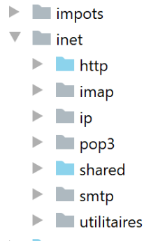
21.1. Les bases de la programmation internet
21.1.1. Généralités
Considérons la communication entre deux machines distantes A et B :
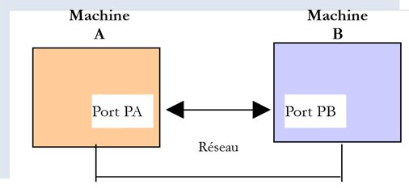
Lorsque une application AppA d'une machine A veut communiquer avec une application AppB d'une machine B de l'Internet, elle doit connaître plusieurs choses :
- l'adresse IP (Internet Protocol) ou le nom de la machine B ;
- le numéro du port avec lequel travaille l'application AppB. En effet la machine B peut supporter de nombreuses applications qui travaillent sur l'Internet. Lorsqu'elle reçoit des informations provenant du réseau, elle doit savoir à quelle application sont destinées ces informations. Les applications de la machine B ont accès au réseau via des guichets appelés également des ports de communication. Cette information est contenue dans le paquet reçu par la machine B afin qu'il soit délivré à la bonne application ;
- les protocoles de communication compris par la machine B. Dans notre étude, nous utiliserons uniquement les protocoles TCP-IP ;
- le protocole de dialogue accepté par l'application AppB. En effet, les machines A et B vont se "parler". Ce qu'elles vont dire va être encapsulé dans les protocoles TCP-IP. Néanmoins, lorsqu'au bout de la chaîne, l'application AppB va recevoir l'information envoyée par l'applicaton AppA, il faut qu'elle soit capable de l'interpréter. Ceci est analogue à la situation où deux personnes A et B communiquent par téléphone : leur dialogue est transporté par le téléphone. La parole va être codée sous forme de signaux par le téléphone A, transportée par des lignes téléphoniques, arriver au téléphone B pour y être décodée. La personne B entend alors des paroles. C'est là qu'intervient la notion de protocole de dialogue : si A parle français et que B ne comprend pas cette langue, A et B ne pourront dialoguer utilement ; Aussi les deux applications communicantes doivent-elles être d'accord sur le type de dialogue qu'elles vont adopter. Par exemple, le dialogue avec un service ftp n'est pas le même qu'avec un service pop : ces deux services n'acceptent pas les mêmes commandes. Elles ont un protocole de dialogue différent ;
21.1.2. Les caractéristiques du protocole TCP
Nous n'étudierons ici que des communications réseau utilisant le protocole de transport TCP dont voici les principales caractéristiques :
- le processus qui souhaite émettre établit tout d'abord une connexion avec le processus destinataire des informations qu'il va émettre. Cette connexion se fait entre un port de la machine émettrice et un port de la machine réceptrice. Il y a entre les deux ports un chemin virtuel qui est ainsi créé et qui sera réservé aux deux seuls processus ayant réalisé la connexion ;
- tous les paquets émis par le processus source suivent ce chemin virtuel et arrivent dans l'ordre où ils ont été émis ;
- l'information émise a un aspect continu. Le processus émetteur envoie des informations à son rythme. Celles-ci ne sont pas nécessairement envoyées tout de suite : le protocole TCP attend d'en avoir assez pour les envoyer. Elles sont stockées dans une structure appelée segment TCP. Ce segment une fois rempli sera transmis à la couche IP où il sera encapsulé dans un paquet IP ;
- chaque segment envoyé par le protocole TCP est numéroté. Le protocole TCP destinataire vérifie qu'il reçoit bien les segments en séquence. Pour chaque segment correctement reçu, il envoie un accusé de réception à l'expéditeur ;
- lorsque ce dernier le reçoit, il l'indique au processus émetteur. Celui-ci peut donc savoir qu'un segment est arrivé à bon port ;
- si au bout d'un certain temps, le protocole TCP ayant émis un segment ne reçoit pas d'accusé de réception, il retransmet le segment en question, garantissant ainsi la qualité du service d'acheminement de l'information ;
- le circuit virtuel établi entre les deux processus qui communiquent est full-duplex : cela signifie que l'information peut transiter dans les deux sens. Ainsi le processus destination peut envoyer des accusés de réception alors même que le processus source continue d'envoyer des informations. Cela permet par exemple au protocole TCP source d'envoyer plusieurs segments sans attendre d'accusé de réception. S'il réalise au bout d'un certain temps qu'il n'a pas reçu l'accusé de réception d'un certain segment n° n, il reprendra l'émission des segments à ce point ;
21.1.3. La relation client-serveur
Souvent, la communication sur Internet est dissymétrique : la machine A initie une connexion pour demander un service à la machine B : il précise qu'il veut ouvrir une connexion avec le service SB1 de la machine B. Celle-ci accepte ou refuse. Si elle accepte, la machine A peut envoyer ses demandes au service SB1. Celles-ci doivent se conformer au protocole de dialogue compris par le service SB1. Un dialogue demande-réponse s'instaure ainsi entre la machine A qu'on appelle machine cliente et la machine B qu'on appelle machine serveur. L'un des deux partenaires fermera la connexion.
21.1.4. Architecture d'un client
L'architecture d'un programme réseau demandant les services d'une application serveur sera la suivante :
21.1.5. Architecture d'un serveur
L'architecture d'un programme offrant des services sera la suivante :
Le programme serveur traite différemment la demande de connexion initiale d'un client de ses demandes ultérieures visant à obtenir un service. Le programme n'assure pas le service lui-même. S'il le faisait, pendant la durée du service il ne serait plus à l'écoute des demandes de connexion et des clients ne seraient alors pas servis. Il procède autrement : dès qu'une demande de connexion est reçue sur le port d'écoute puis acceptée, le serveur crée une tâche chargée de rendre le service demandé par le client. Ce service est rendu sur un autre port de la machine serveur appelé port de service. On peut ainsi servir plusieurs clients en même temps.
Une tâche de service aura la structure suivante :
21.2. Découvrir les protocoles de communication de l'internet
21.2.1. Introduction
Lorsqu'un client s'est connecté à un serveur, s'établit ensuite un dialogue entre-eux. La nature de celui-ci forme ce qu'on appelle le protocole de communication du serveur. Parmi les protocoles les plus courants de l'internet on trouve les suivants :
- HTTP : HyperText Transfer Protocol - le protocole de dialogue avec un serveur web (serveur HTTP) ;
- SMTP : Simple Mail Transfer Protocol - le protocole de dialogue avec un serveur d'envoi de courriers électroniques (serveur SMTP) ;
- POP : Post Office Protocol - le protocole de dialogue avec un serveur de stockage du courrier électronique (serveur POP). Il s'agit là de récupérer les courriers électroniques reçus et non d'en envoyer ;
- IMAP : Internet Message Access Protocol - le protocole de dialogue avec un serveur de stockage du courrier électronique (serveur IMAP). Ce protocole a remplacé progressivement le protocole POP plus ancien ;
-
FTP : File Transfer Protocol - le protocole de dialogue avec un serveur de stockage de fichiers (serveur FTP) ; Tous ces protocoles ont la particularité d'être des protocoles à lignes de texte : le client et le serveur s'échangent des lignes de texte. Si on a un client capable de :
-
créer une connexion avec un serveur TCP ;
- afficher à la console les lignes de texte que le serveur lui envoie ;
- envoyer au serveur les lignes de texte qu'un utilisateur saisirait au clavier ; alors on est capable de dialoguer avec un serveur TCP ayant un protocole à lignes de texte pour peu qu'on connaisse les règles de ce protocole.
21.2.2. Utilitaires TCP
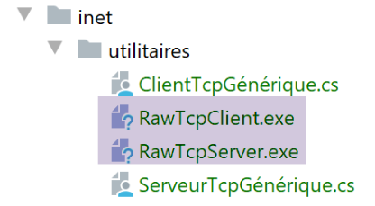
Dans les codes associés à ce document, on trouve deux utilitaires de communication TCP :
- [RawTcpClient] permet de se connecter sur le port P d’un serveur S ;
- [RawTcpServer] permet de créer un serveur qui attend des clients sur un port P ; Ce sont deux programmes C# dont les codes sources vous sont donnés. Vous pouvez donc les modifier.
Le serveur TCP [RawTcpServer] s’appelle avec la syntaxe [RawTcpServeur port] pour créer un service TCP sur le port [port] de la machine locale (l’ordinateur sur lequel vous travaillez) :
- le serveur peut servir plusieurs clients simultanément ;
- le serveur exécute les commandes tapées par l’utilisateur tapées au clavier. Celles-ci sont les suivantes :
- list : liste les clients actuellement connectés au serveur. Ceux-ci sont affichés sous la forme [id=x-nom=y]. Le champ [id] sert à identifier les clients ;
- send x [texte] : envoie texte au client n° x (id=x). Les crochets [] ne sont pas envoyés. Ils sont nécessaires dans la commande. Ils servent à délimiter visuellement le texte envoyé au client ;
- close x : ferme la connexion avec le client n° x ;
- quit : ferme toutes les connexions et arrête le service ;
- les lignes envoyées par le client au serveur sont affichées sur la console ;
- l’ensemble des échanges est logué dans un fichier texte portant le nom [machine-port.txt] où
- [machine] est le nom de la machine sur laquelle s’exécute le code ;
-
[port] est le port de service qui répond aux demandes du client ; Le client TCP [RawTcpClient] s’appelle avec la syntaxe [RawTcpClient serveur port] pour se connecter au port [port] du serveur [serveur] :
-
les lignes tapées par l’utilisateur au clavier sont envoyées au serveur ;
- les lignes envoyées par le serveur sont affichées sur la console ;
- l’ensemble des échanges est logué dans un fichier texte portant le nom [serveur-port.txt] ; Voyons un exemple. On ouvre deux fenêtres terminal PyCharm et on se positionne dans chacune d’elles sur le dossier des utilitaires :
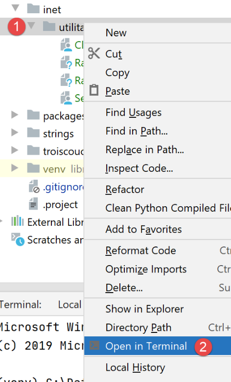
Dans l’une des fenêtres on lance le serveur [RawTcpServer] sur le port 100 :
- ligne 1, nous sommes placés dans le dossier des utilitaires ;
- ligne 1, nous lançons le serveur TCP sur le port 100 ;
- lignes 2-4, le serveur se met en attente d’un client TCP et affiche une liste de commandes que l’utilisateur au clavier peut taper ;
- ligne 5, le serveur attend une commande tapée par l’utilisateur au clavier ; Dans l’autre fenêtre de commandes, on lance le client TCP :
- ligne 1, nous sommes placés dans le dossier des utilitaires ;
- ligne 1 nous lançons le client TCP : nous lui disons de se connecter au port 100 de la machine locale (celle sur laquelle s’exécute le code de [RawTcpClient]) ;
- ligne 2, le client a réussi à se connecter au serveur. On indique les coordonnées du client : il est sur la machine [DESKTOP-30FF5FB] (la machine locale dans cet exemple) et utilise le port [51173] pour communiquer avec le serveur :
- ligne 3, le client attend une commande tapée par l’utilisateur au clavier ; Revenons sur la fenêtre du serveur. Son contenu a évolué :
- ligne 5, un client a été détecté. Le serveur lui a donné le n° 1. Le serveur a correctement identifié le client distant (machine et port) ;
- ligne 6, le serveur se remet en attente d’un nouveau client ; Revenons sur la fenêtre du client et envoyons une commande au serveur :
- ligne 4, la commande envoyée au serveur ; Revenons sur la fenêtre du serveur. Son contenu a évolué :
- ligne 7, entre crochets, le message reçu par le serveur ; Envoyons une réponse au client :
- ligne 8, la réponse envoyée au client 1. Seul le texte entre les crochets est envoyé, pas les crochets eux-mêmes ; Revenons à la fenêtre du client :
- ligne 5, la réponse reçue par le client. Le texte reçu est celui entre crochets ; Revenons à la fenêtre du serveur pour voir d’autres commandes :
- ligne 9, nous demandons la liste des clients ;
- ligne 10, la réponse ;
- ligne 11, nous fermons la connexion avec le client n° 1 ;
- ligne 12, la confirmation du serveur ;
- ligne 13, nous arrêtons le serveur ;
- ligne 14, la confirmation du serveur ; Revenons à la fenêtre du client :
- ligne 6, le client a détecté la fin du service ; Deux fichiers de logs ont été créés, un pour le serveur, un autre pour le client :
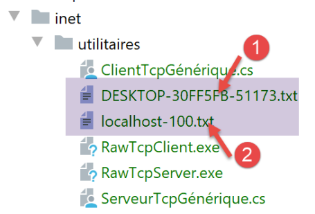
- en [1], les logs du serveur : le nom du fichier est le nom du client sous la forme [machine-port]. Cela permet d’avoir des fichiers de logs différents pour des clients différents ;
- en [2], les logs du client : le nom du fichier est le nom du serveur sous la forme [machine-port] ; Les logs du serveur sont les suivants :
Les logs du client sont les suivants :
21.3. Obtenir le nom ou l'adresse IP d'une machine de l'Internet
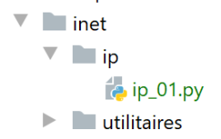
Les machines de l’internet sont identifiées par une adresse IP (IPv4 ou IPv6) et le plus souvent par un nom. Mais finalement seule l’adresse IP est utilisée par les protocoles de communication de l’internet. Il faut donc connaître l’adresse IP d’une machine identifiée par son nom.
Le script [ip-01.py] est le suivant :
Commentaires
- ligne 2 : le module [socket] fournit les fonctions nécessaires à la gestion des sockets internet. [socket] signifie prise électrique, prise de réseau ;
- ligne 6 : la fonction [get_ip_and_name] permet à partir du nom internet d'une machine d'obtenir :
- l'adresse IP de la machine ;
- le nom de la machine obtenu à partir de l'adresse IP précédente ;
- ligne 10 : la fonction [socket.gethostbyname] permet d'obtenir l'adresse IP d'une machine à partir d'un de ces noms (une machine internet peut avoir un nom principal et des alias) ;
- ligne 12 : les fonctions sur les sockets lancent l'exception [socket.error] dès qu'une erreur survient ;
- ligne 19 : la fonction [socket.gethostbyaddr] permet d'obtenir le nom d'une machine à partir de son adresse IP. On va voir qu'on peut obtenir un nom différent de celui passé ligne 6 ;
- ligne 30 : une liste de noms de machines. Le dernier nom est erroné. Le nom [localhost] désigne la machine sur laquelle vous travaillez et qui exécute le script ;
- ligne 33-35 : on affiche les IP de ces machines ; Résultats :
21.4. Le protocole HTTP (HyperText Transfer Protocol)
21.4.1. Exemple 1
Lorsqu’un navigateur affiche une URL, il est le client d’un serveur web ou dit autrement d’un serveur HTTP. C’est lui qui prend l’initiative et il commence par envoyer un certain nombre de commandes au serveur. Pour ce premier exemple :
- le serveur sera l’utilitaire [RawTcpServer] ;
- le client sera un navigateur ; Nous lançons d’abord le serveur sur le port 100 :
Puis avec un navigateur, nous demandons l’URL [http://localhost:100], ç-a-d que nous disons que le serveur HTTP interrogé travaille sur le port 100 de la machine locale :
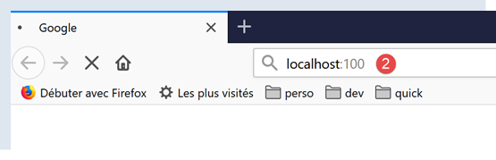
Revenons sur la fenêtre du serveur :
- ligne 5, le client qui s’est connecté ;
- lignes 9-22 : la série de lignes de texte qu’il a envoyées :
- ligne 9 : cette ligne a le format [GET URL HTTP/1.1]. Elle demande l’URL / et demande au serveur d’utiliser le protocole HTTP 1.1 ;
- ligne 10 : cette ligne a le format [Host: serveur:port]. La casse de la commande [Host] n’importe pas. On rappelle ici que le client interroge un serveur local opérant sur le port 100 ;
- ligne 14 : la commande [User-Agent] donne l’identité du client ;
- ligne 15 : la commande [Accept] indique quels types de document sont acceptés par le client ;
- ligne 21 : la commande [Accept-Language] indique dans quelle langue sont souhaités les documents demandés s’ils existent en plusieurs langues ;
- ligne 11 : la commande [Connection] indique le mode de connexion souhaité : [keep-alive] indique que la connexion doit être maintenue jusqu’à ce que les échanges soient terminés ;
- ligne 22 : le client termine ses commandes par une ligne vide ; Nous terminons la connexion en terminant le serveur :
21.4.2. Exemple 2
Maintenant que nous connaissons les commandes envoyées par un navigateur pour réclamer une URL, nous allons réclamer cette URL avec notre client TCP [RawTcpClient]. Le serveur Apache de Laragon (paragraphe |Installation de Laragon|) sera notre serveur web.
Lançons Laragon puis le serveur web Apache :
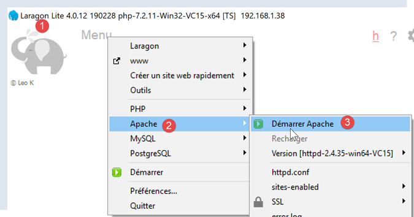
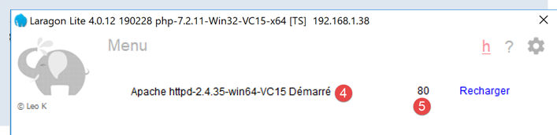
Maintenant avec un navigateur, demandons l’URL [http://localhost:80]. Ici nous ne précisons que le serveur [localhost:80] et pas d’URL de document. Dans ce cas c’est l’URL / qui est demandée, ç-à-d la racine du serveur web :
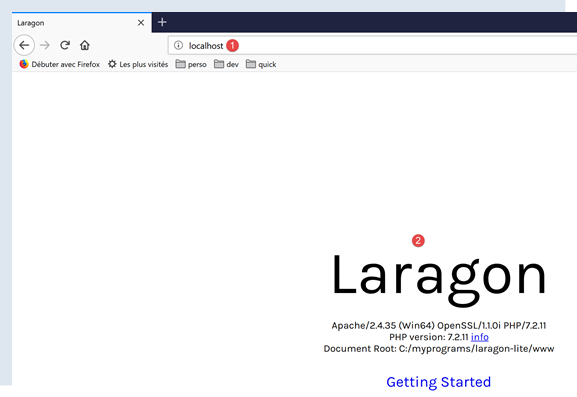
- en [1], l’URL demandée. On a tapé initialement [http://localhost:80] et le navigateur (Firefox ici) l’a transformée simplement en [localhost] car le protocole [http] est implicite lorsqu’aucun protocole n’est mentionné et le port [80] est implicite lorsque le port n’est pas précisé ;
- en [2], la page racine / du serveur web interrogé ; Maintenant, visualisons le texte reçu par le navigateur :
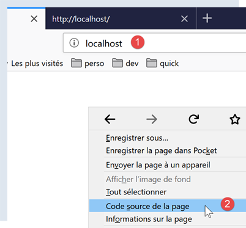
- on clique droit sur la page reçue et on choisit l’option [2]. On obtient le code source suivant :
Maintenant demandons l’URL [http://localhost:80] avec notre client TCP :
- ligne 1, nous nous connectons au port 80 du serveur localhost. C’est là qu’opère le serveur web de Laragon ; Nous tapons maintenant les commandes que nous avons découvertes dans le paragraphe précédent :
- ligne 4, la commande [GET]. On demande la racine / du serveur web ;
- ligne 5, la commande [Host] ;
- ce sont les deux seules commandes indispensables. Pour les autres commandes, le serveur web prendra des valeurs par défaut ;
- ligne 6, la ligne vide qui doit terminer les commandes du client ;
- dessous la ligne 6, vient la réponse du serveur web ;
- lignes 7-12 : les entêtes HTTP de la réponse du serveur ;
- ligne 13 : la ligne vide qui signale la fin des entêtes http ;
- lignes 14-82, le document HTML demandé ligne 4 ; Nous chargeons le fichier de logs [localhost-80.txt] :
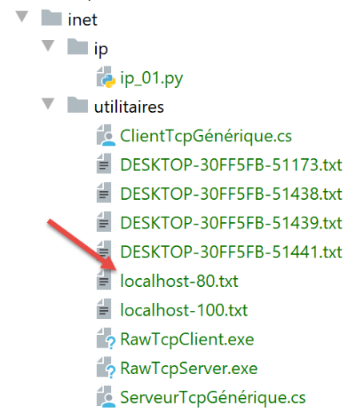
- lignes 11-79 : le document HTML reçu. Dans l’exemple précédent, Firefox avait reçu le même ; Nous avons désormais les bases pour programmer un client TCP qui demanderait une URL.
21.4.3. Exemple 3
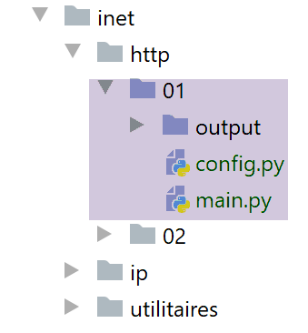
Le script [http/01/main.py] est un client HTTP configuré par le fichier [config.py]. Le contenu de celui-ci est le suivant :
- le contenu du fichier est une liste d’URL, chaque élément de la liste étant un dictionnaire. Ce dictionnaire indique comment se connecter au sité désigné par la clé [site] ;
- lignes 4-10 : la signification des clés de chaque dictionnaire ; Le script [http/01/main.py] est le suivant :
1 2 3 4 5 6 7 8 9 10 11 12 13 14 15 16 17 18 19 20 21 22 23 24 25 26 27 28 29 30 31 32 33 34 35 36 37 38 39 40 41 42 43 44 45 46 47 48 49 50 51 52 53 54 55 56 57 58 59 60 61 62 63 64 65 66 67 68 69 70 71 72 73 74 75 76 77 78 79 80 81 82 83 84 85 86 87 88 89 90 91 92 93 94 95 96 97 98 99 100 101 102 103 104 105 106 107 108 109 110 111 112 113 114 115 116 117 118 119 120 121 122 123 124 | |
Commentaires du code :
- lignes 108-109 : le dictionnaire [config] du module [config.py] est récupéré ;
- ligne 111-122 : ce dictionnaire est exploité ;
- ligne 118, 7 : la fonction [get_url(url)] demande un document du site web url[site] et le stocke dans le fichier texte url[site].HTML. Par défaut, les échanges client/serveur sont logués sur la console (suivi=True) ;
- on fait tout dans un [try / finally] (lignes 14-96). Il n'y a pas de clause [except]. Les exceptions vont remonter au code appelant et c'est celui-ci qui les arrête et les affiche (lignes 119-120) ;
- lignes 16-17 : ouverture d'une connexion vers le serveur web. La fonction [socket.create_connection] admet trois paramètres :
- [param1] : est le nom de la machine de l'internet qu'on veut atteindre ;
- [param2] : est le n° du port du service auquel on veut se connecter ;
- [param3] : [socket.create_connection] rend un socket et [param3], s'il est présent, désigne le timeout du socket créé. Le timeout est le délai maximal d'attente du socket lorsqu'il attend une réponse de la machine distante ;
- lignes 27-28 : création du fichier [site.html] dans lequel on stockera le document HTML reçu ;
- lignes 34-43 : la première commande du client doit être la commande [GET URL HTTP/1.1] ;
- ligne 43 : la fonction [sock.send] permet au client d'envoyer des données au serveur. Ici la ligne de texte envoyée a la signification suivante : "Je veux (GET) la page [URL] du site web auquel je suis connecté. Je travaille avec le protocole HTTP version 1.1" ;
- ligne 43 : l'instruction [sock.send(bytearray(commande, 'utf-8'))] envoie un tableau d'octets octets (bytearray). Ce tableau est obtenu par conversion de la chaîne [commande] en une suite d'octets codés en UTF-8 ;
- lignes 44-52 : on envoie les autres lignes du protocole HTTP [Host, User-Agent, Accept, Accept-Language…]. Leur ordre n’importe pas ;
- lignes 53-55 : on envoie l'entête HTTP [Connection: close] pour demander au serveur de fermer sa connexion lorsqu'il aura envoyé le document demandé. Par défaut il ne le fait pas. Il faut donc le lui demander explicitement. L'intérêt est que cette fermeture va être détectée côté client et c'est comme cela que celui-ci saura qu'il aura reçu tout le document demandé ;
- lignes 56-57 : on envoie une ligne vide au serveur pour signifier que le client a terminé d’envoyer ses entêtes HTTP et qu’il attend désormais le document demandé ;
- lignes 68-86 : le serveur va tout d’abord envoyer une série d’entêtes HTTP qui vont donner diverses informations sur le document demandé. Ces entêtes se terminent par une ligne vide ;
- lignes 69-73 : pour pouvoir lire la réponse du serveur, ligne par ligne, on utilise la méthode [sock.makefile(encoding=encoding)]. Le paramètre facultatif [encoding] précise l'encodage du texte attendu. Après cette opération, le flux de lignes envoyées par le serveur va pouvoir être lu comme un fichiet texte classique ;
- ligne 78 : on lit une ligne envoyée par le serveur avec la méthode [readline]. On la débarrasse de ses espaces (blancs, marque de fin de ligne) de début et fin de ligne ;
- lignes 81-83 : si la ligne n'est pas vide et que le suivi a été demandé, la ligne reçue est affichée sur la console ;
- lignes 84-86 : si on a récupéré la ligne vide qui marque la fin des entêtes HTTP envoyés par le serveur alors on arrête la boucle de la ligne 76 ;
- lignes 90-95 : les lignes de texte de la réponse du serveur peuvent être lues ligne par ligne avec une boucle while et enregistrées dans le fichier texte [html]. Lorsque le serveur web a envoyé la totalité de la page qu'on lui a demandée, il ferme sa connexion avec le client. Côté client, cela sera détecté comme une fin de fichier et on sortira de la boucle des lignes 90-95 ;
- lignes 96-102 : erreur ou pas, on libère toutes les ressources utilisées par le code ; Résultats :
La console affiche les logs suivants :
Commentaires
- ligne 12 : l'URL [http://localhost/] a été trouvée (code 200) ;
- ligne 29 : l'URL [http://sergetahe.com/] n'a pas été trouvée (code 302). Le code 302 signifie que la page demandée a changé d'URL. La nouvelle URL est indiquée par l'entête HTTP [Location] de la ligne 36 ;
- ligne 49 : la requête qui a été faite au serveur [http://tahe.developpez.com] est incorrecte (code 400) ;
- ligne 65 : l'URL [http://www.sergetahe.com/] n'a pas été trouvée (code 301). Le code 301 signifie que la page demandée a changé d'URL et ce de façon définitive. La nouvelle URL est indiquée par l'entête HTTP [Location] de la ligne 71 ; De façon générale les codes 3xx, 4xx et 5xx d’un serveur HTTP sont des codes d’erreur.
L'exécution a produit fichiers :
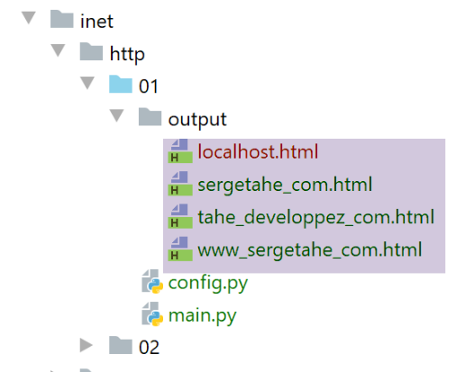
Le fichier [output/localhost.HTML] reçu est le suivant :
Nous avons bien obtenu le même document qu’avec le navigateur Firefox.
Le document [output/sergetahe_com.html] reçu est le suivant :
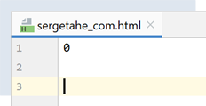
La plupart des serveurs http envoient par morceaux leurs réponses aux requêtes qui leur sont faites. Chaque morceau envoyé est précédé d'une ligne indiquant le nombre d'octets du morceau qui suit. Cela permet au client de lire ce nombre exact d'octets pour avoir le morceau. Ici le 0 indique que le morceau qui suit a zéro octet. On rappelle que le serveur avait indiqué le document [http://sergetahe.com/] avait changé d'URL. Il n'a donc pas envoyé de document.
Le document [output/tahe_developpez_com.html] est le suivant :
- lignes 1-12 : le serveur a envoyé un document HTML malgré le fait que la requête était incorrecte (ligne 49 des résultats). Le document HTML permet au serveur de préciser la cause de l’erreur. Celle-ci est indiquée aux lignes 6 et 7 :
- ligne 7 : notre client a utilisé le protocole HTTP ;
- ligne 8 : le serveur travaille avec le protocole HTTPS (S=sécurisé) et n’accepte pas le protocole HTTP ; Le document [output/www_sergetahe_com.html] est le suivant :
Là également, il s’est produit une erreur (ligne 3). Néanmoins, le serveur prend soin d’envoyer un document HTML détaillant celle-ci (lignes 1-7).
21.4.4. Exemple 4
Les exemples précédents nous ont montré que notre client HTTP était insuffisant. Nous allons maintenant présenter un outil appelé [curl] qui permet de récupérer des documents web en gérant les difficultés mentionnées : protocole HTTPS, document envoyé par morceaux, redirections… L’outil [curl] a été installé avec Laragon :
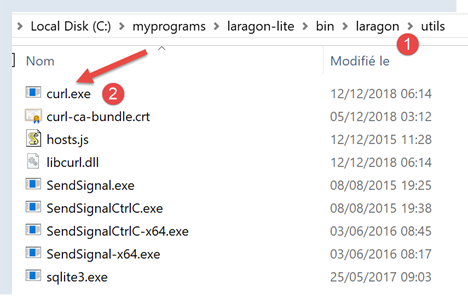
Ouvrons un terminal PyCharm [1] :
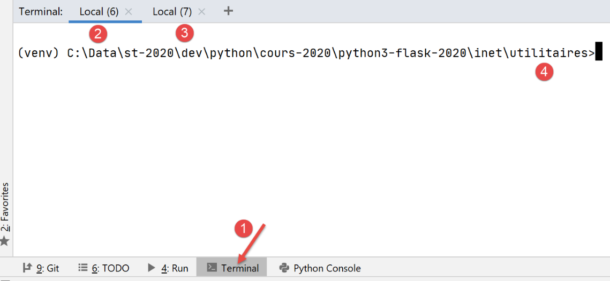
- en [1], l’accès aux terminaux de PyCharm ;
- en [2-3], les terminaux déjà actifs ;
- en [4], le dossier dans lequel vous êtes. Dans ce qui suit il n’importe pas ; Dans le terminal nous tapons la commande suivante :
Le fait que la commande [curl –help] ait produit des résultats montre que la commande [curl] est dans le PATH du terminal. Sous Windows, le PATH est l’ensemble des dossiers explorés lorsque l’utilisateur tape une commande exécutable, ici [curl]. La valeur du PATH peut être connue :
Ligne 2, les dossiers du PATH séparés par des points-virgules. Dans cette liste n’apparaît pas de dossier lié à Laragon. Si on enquête un peu, on trouve qu’il y a un [curl] dans le dossier [c:\windows\system32]. C’est celui-ci qui a répondu auparavant.
Si on veut utiliser l’outil [curl] livré avec Laragon, on pourra procéder comme suit :
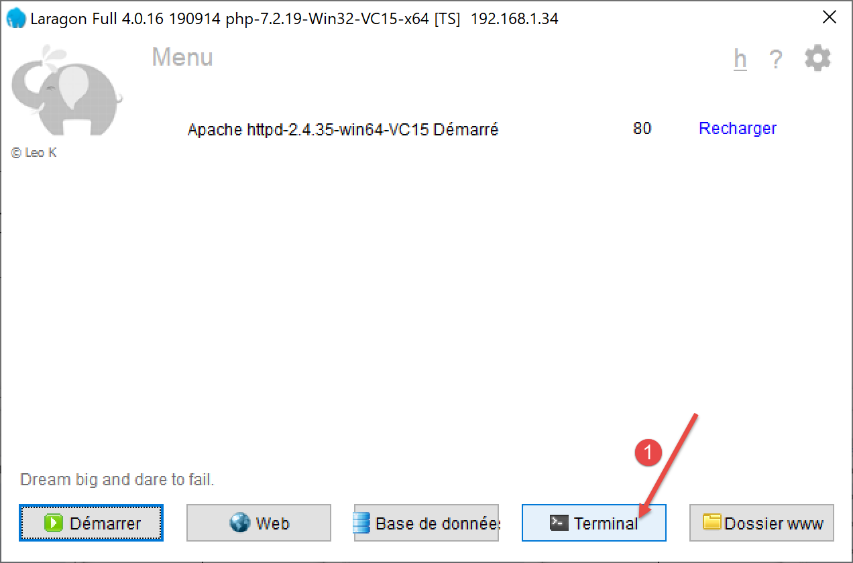

- en [2], le terminal Laragon ;
- en [3], ce bouton permet de créer de nouveaux terminaux, chacun s’installant dans un onglet de la fenêtre ci-dessus ;
- en [4], on demande le PATH du terminal Laragon ;
- on obtient quelque chose de très différent de ce qui avait été obtenu dans un terminal PyCharm. Ce PATH contient de nombreux dossiers créés lors de l’installation de Laragon. Le dossier contenant l’outil [curl] en fait partie :
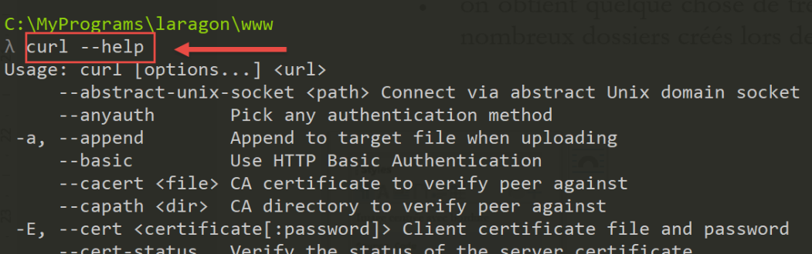
Par la suite, utilisez le terminal de votre choix. Sachez simplement que lorsque vous voulez utiliser un outil amené par Laragon, le terminal Laragon est à préférer.
La commande [curl --help] fait afficher toutes les options de configuration de [curl]. Il y en a plusieurs dizaines. Nous en utiliserons très peu. Pour demander une URL il suffit de taper la commande [curl URL]. Cette commande affichera sur la console le document demandé. Si on veut de plus les échanges HTTP entre le client et le serveur on écrira [curl --verbose URL]. Enfin pour enregistrer le document HTML demandé dans un fichier on écrira [curl --verbose --output fichier URL].
Pour éviter de polluer le système de fichiers de notre machine, déplaçons-nous à un autre endroit (j’utilise ici un terminal Laragon) :
- ligne 3, on se déplace dans le dossier [c:\temp]. Si ce dossier n’existe pas, vous pouvez le créer ou en choisir un autre ;
- ligne 6, on crée un dossier appelé [curl] ;
- ligne 9, on se positionne dessus ;
- ligne 12, on liste son contenu. Il est vide (ligne 20); Assurez-vous que le serveur Apache de Laragon est lancé et avec [curl] demandez l’URL [http://localhost/] avec la commande [curl –verbose –output localhost.html http://localhost/]. On obtient les résultats suivants :
- lignes 10-13 : lignes envoyées par [curl] au serveur [localhost]. On reconnaît le protocole HTTP ;
- lignes 14-20 : lignes envoyées en réponse par le serveur ;
- ligne 14 : indique qu’on a bien eu le document demandé ; Le fichier [localhost.html] contient le document demandé. Vous pouvez le vérifier en chargeant le fichier dans un éditeur de texte.
Maintenant demandons l’URL [https://tahe.developpez.com:443/]. Pour avoir cette URL, le client HTTP doit savoir parler HTTPS. C’est le cas du client [curl].
Les résultats console sont les suivants :
- lignes 10-39 : les échanges client / serveur pour sécuriser la connexion : celle-ci sera chiffrée ;
- lignes 41-44 : les entêtes HTTP envoyés par le client [curl] au serveur ;
- ligne 52 : le document demandé a bien été trouvé ;
- ligne 57 : le document est envoyé par morceaux ; [curl] gère correctement à la fois le protocole sécurisé HTTPS et le fait que le document soit envoyé par morceaux. Le document envoyé sera trouvé ici dans le fichier [tahe.developpez.com.html].
Demandons maintenant l’URL [http://sergetahe.com/cours-tutoriels-de-programmation]. Nous avions vu que pour cette URL, il y avait une redirection vers l’URL [http://sergetahe.com/cours-tutoriels-de-programmation/] (avec un / à la fin).
Les résultats console sont alors les suivants :
1 2 3 4 5 6 7 8 9 10 11 12 13 14 15 16 17 18 19 20 21 22 23 24 25 26 27 28 29 30 31 32 33 34 35 36 37 38 39 40 41 42 43 44 45 46 47 48 49 50 51 52 53 54 55 56 57 58 59 60 61 62 63 64 65 66 67 68 69 70 71 72 73 74 75 76 77 78 79 80 81 82 83 84 85 86 87 88 89 90 91 92 93 94 95 96 97 98 99 100 101 102 103 104 105 106 107 108 109 110 111 112 113 | |
- ligne 2 : on utilise l’option [--location] pour indiquer qu’on veut suivre les redirections envoyées par le serveur ;
- ligne 13 : le serveur indique que le document demandé a changé d’URL ;
- ligne 18 : il indique la nouvelle URL du document demandé ;
- ligne 31 : [curl] émet une nouvelle requête vers cette fois la nouvelle URL ;
- ligne 36 : le serveur répond de nouveau que l’URL a changé ;
- ligne 41 : la nouvelle URL est exactement la même que celle qui a été redirigée à un détail près : le procole a changé. Il est devenu HTTPS (ligne 41) alors qu’il était http auparavant (ligne 31) ;
- ligne 49 : une nouvelle requête st émise vers la nouvelle URL. Celle-ci est chiffrée. Aussi tout un dialogue de mise en place de la sécurité se met en place, lignes 53-91 ;
- ligne 92 : la nouvelle URL est demandée avec cette fois le protocole HTTP/2 ;
- ligne 100 : le document a été trouvé ; Le document demandé sera trouvé dans le fichier [sergetahe.com.html].
21.4.5. Exemple 5
Python possède un module appelé [pyccurl] qui permet d’utiliser les capacités de l’outil [curl] dans un programme Python. Nous installons ce module :
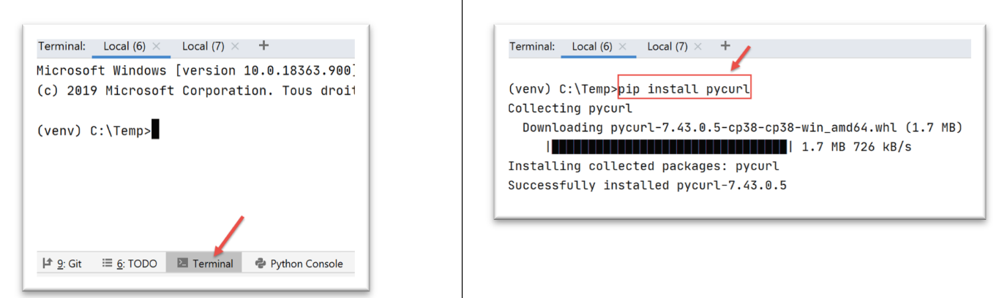
Nous allons écrire un nouveau script [http/02/main.py] :

Le fichier [http/02/config] est le suivant :
Le fichier contient une liste de dictionnaires où chacun d'eux a la structure suivante :
- site : le nom d’un serveur web ;
- encoding : le type d'encodage du document attendu ;
- timeout : durée maximale d’attente de la réponse du serveur exprimée en millisecondes. Au-delà, le client se déconnectera ;
- url : URL du document demandé ; Le code du script [http/02/main.py] est le suivant :
Commentaires
- ligne 5 : on importe le module [pycurl] ;
- ligne 3 : on importe la classe [BytesIO] qui va nous permettre de stocker les données reçues du serveur dans un flux binaire ;
- lignes 70-72 : on récupère la configuration de l’application ;
- lignes 75-85 : on boucle sur la liste des URL trouvées dans la configuration ;
- ligne 81 : pour chacune des URL, on appelle la fonction [get_url] qui va télécharger l’URL url[‘target’] avec un timeout url['timeout'] ;
- ligne 9 : la fonction [get_url] reçoit la configuration de l’URL à interroger ;
- lignes 16-19 : on récupère la configuration de l’URL dans des variables séparées ;
- lignes 26, 61 : on fait toutes les opérations au sein d'un try / finally. On n'arrête pas les exceptions qui remonteront alors au code appelant qui lui les arrête ;
- ligne 28 : on prépare une session [curl]. [pycurl.Curl()] rend une ressource [curl] qui va opérer la transaction avec un serveur ;
- ligne 30 : instanciation du flux binaire qui va stocker les données reçues ;
- lignes 32-48 : le dictionnaire [options] va paramétrer la connexion [curl] au serveur. leur rôle est indiqué dans les commentaires ;
- lignes 49-51 : les options de la connexion sont transmises à la ressource [curl] ;
- ligne 53 : connexion à l’URL demandée avec les options définies. A cause de l’option [curl.WRITEDATA: flux] (ligne 36), la fonction [curl.perform()] va stocker les données reçues dans [flux] ;
- lignes 54-60 : on crée le fichier HTML qui va stocker le document HTML reçu ;
- ligne 60 : le flux binaire [flux.getvalue()] va être stocké comme une chaîne de caractères dans le fichier HTML. L'encodage de cette chaîne est précisé dans la méthode [decode(encoding)]. Il faut donc connaître l'encodage du document envoyé par le serveur. Si on se trompe, l'opération de décodage du flux binaire va échouer. L'encodage est précisé dans le fichier de configuration de l’URL (ligne 12 par exemple). On aurait pu gérer dynamiquement cette information car le serveur l'envoie dans ces entêtes HTTP. Cela aurait été préférable. Pour garder un code simple, nous ne l'avons pas fait. Pour connaître le type d'encodage du document, il suffit de demander l'URL désirée avec un navigateur et regarder les entêtes HTTP envoyés par celui-ci en mode débogage du navigateur (F12) ou bien le document lui-même car celui-ci précise également l'encodage :
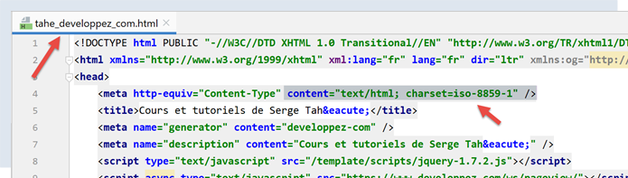
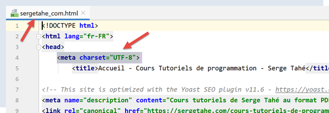
- ligne 61-66 : les ressources allouées sont libérées ; Lorsqu’on exécute le script [main.py] on obtient les résultats console suivants :
1 2 3 4 5 6 7 8 9 10 11 12 13 14 15 16 17 18 19 20 21 22 23 24 25 26 27 28 29 30 31 32 33 34 35 36 37 38 39 40 41 42 43 44 45 46 47 48 49 50 51 52 53 54 55 56 57 58 59 60 61 62 63 64 65 66 67 68 69 70 71 72 73 74 75 76 77 78 79 80 81 82 83 84 85 86 87 88 89 90 91 92 93 94 95 96 97 98 99 100 101 102 103 104 105 106 107 108 109 110 111 112 113 114 115 116 117 118 119 120 121 122 123 124 125 126 127 128 129 130 131 132 133 134 135 136 137 138 139 140 141 142 143 144 145 146 147 148 149 150 151 152 153 154 155 156 157 158 159 160 161 162 163 164 165 166 167 168 169 170 171 172 173 174 175 176 177 178 179 180 181 182 183 184 185 186 187 188 189 190 191 192 193 194 195 196 197 198 199 200 | |
Commentaires
- en bleu, les commandes http envoyées au serveur ;
- en vert, les données reçues en réponse par le client ;
- on obtient les mêmes échanges qu’avec l’outil [curl] ;
- ligne 9 : l'URL [http://sergetahe.com/] est demandée ;
- ligne 15 : le serveur répond que la page a bougé. Ligne 21, la nouvelle URL ;
- ligne 32 : l'URL [http://sergetahe.com/cours-tutoriels-de-programmation] est demandée ;
- ligne 38 : le serveur répond que la page a bougé. Ligne 43, la nouvelle URL ;
- ligne 54 : l'URL [http://sergetahe.com/cours-tutoriels-de-programmation/] est demandée ;
- ligne 60 : le serveur répond que la page a bougé. Ligne 65, la nouvelle URL. Elle utilise le protocole sécurisé [HTTPS] ;
- lignes 71-75 : le protocole sécurisé est mis en place avec le serveur ;
- ligne 76 : l'URL [https://sergetahe.com/cours-tutoriels-de-programmation/] est demandée ;
- ligne 82 : le document demandé a été trouvé ;
21.4.6. Conclusion
Nous avons, dans cette section, découvert le protocole HTTP et avons écrit un script [http/02/main.py] capable de télécharger une URL du web.
21.5. Le protocole SMTP (Simple Mail Transfer Protocol)
21.5.1. Introduction
Dans ce chapitre :
- [Serveur B] sera un serveur SMTP local que nous installerons ;
- [Client A] sera un client SMTP de diverses formes :
- le client [RawTcpClient] pour découvrir le protocole SMTP ;
- un script Python rejouant le protocole SMTP du client [RawTcpClient] ;
- un script Python utilisant le moduke [smtplib] permettant d’envoyer toutes sortes de mails ;
21.5.2. Création d’une adresse [gmail]
Pour faire nos tests SMTP, nous aurons besoin d’une adresse mail à qui écrire. Nous allons créer pour cela une adresse Gmail [https://www.google.com/intl/fr/gmail/about/] :
Note : Envoyez quelques mails à l'adresse que vous avez créée. Ne passez à la suite que lorsque vous êtes sûr que le compte créé est capable de recevoir des mails.
21.5.3. Installation d’un serveur SMTP
Pour nos tests, nous installerons le serveur de mail [hMailServer] qui est à la fois un serveur SMTP permettant d’envoyer des mails, un serveur POP3 (Post Office Protocol) permettant de lire les mails stockés sur le serveur, un serveur IMAP (Internet Message Access Protocol) qui lui aussi permet de lire les mails stockés sur le serveur mais va au-delà. Il permet notamment de gérer le stockage des mails sur le serveur.
Le serveur de mail [hMailServer] est disponible à l’URL [https://www.hmailserver.com/] (mai 2019).
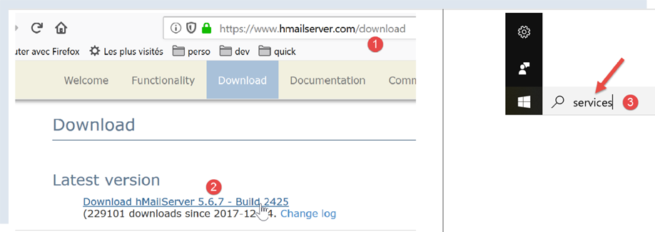
Au cours de l’installation, certains renseignements vous seront demandés :
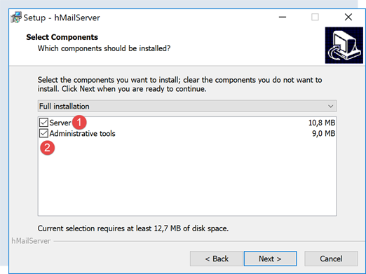
- en [1-2], sélectionnez à la fois le serveur de mails et les outils pour l’administrer ;
-
durant l’installation le mot de l’administrateur vous sera demandé : notez le, car il vous sera nécessaire ; [hMailServer] s’installe comme un service Windows lancé automatiquement au démarrage de la machine. Il est préférable de choisir un démarrage manuel :
-
en [3], on tape [services] dans la zone de saisie de la barre d’état ;
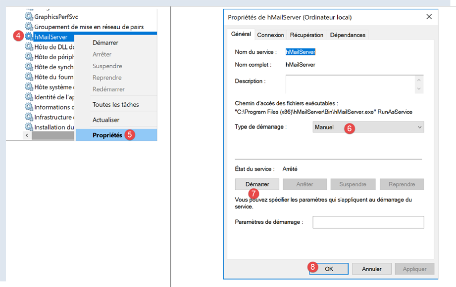
- en [4-8], on met le service en mode [manuel] (6), on le lance (7) ; Une fois démarré, le serveur [hMailServer] doit être configuré. Le serveur a été installé avec un programme d’administration [hMailServer Administrator] :
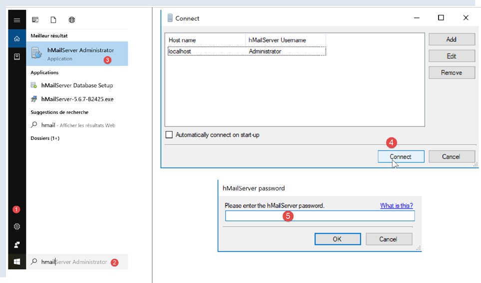
- en [2], dans la zone de saisie de la barre d’état, taper [hmailserver] ;
- en [3], lancer l’administrateur ;
- en [4], connecter l’administrateur au serveur [hMailServer] ;
-
en [5], taper le mot de passe saisi lors de l’installation de [hMailServer] ; Si vous avez oublié le mot de passe, procédez comme suit :
-
arrêtez le serveur [hMailServer] ;
- ouvrez le fichier [<hmailserver>/bin/hmailserver.ini] où <hmailserver> est le dossier d'installation du serveur :
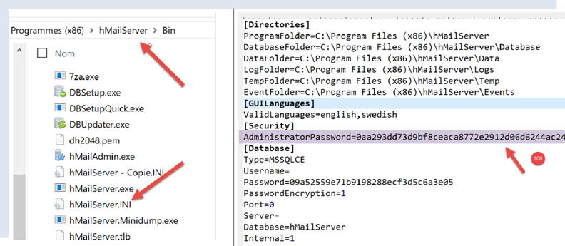
- en [100], enlevez le mot de passe de la ligne [AdministratorPassword]. Cela aura pour effet que l'administrateur n'aura plus de mot de passe. Tapez simplement [Entrée] lorsque celui-ci vous sera demandé ;
Continuons la configuration du serveur :
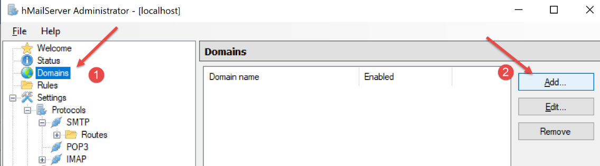
- en [1-2], ajoutez un domaine (s’il n’existe pas déjà) ;
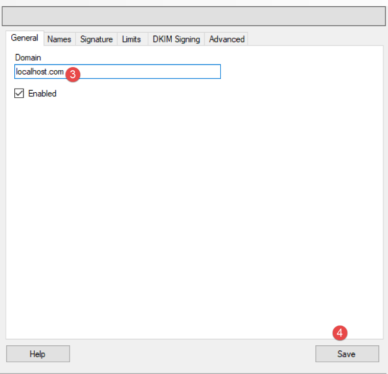
- en [3], on peut mettre à peu près n’importe quoi pour les tests que nous allons opérer. Dans la réalité, il faudrait mettre le nom d’un domaine existant ;
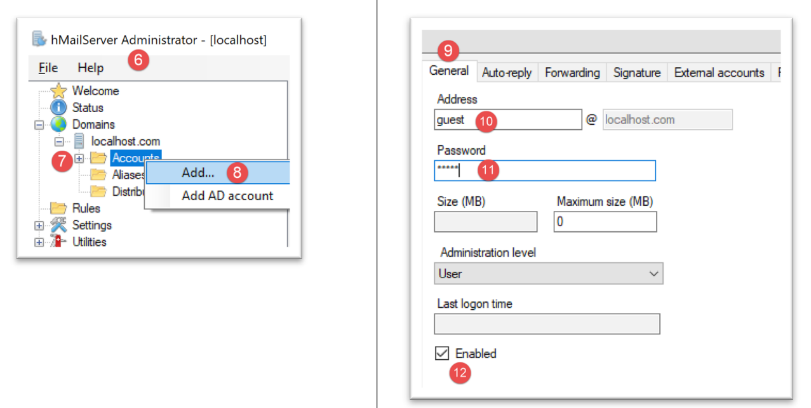
Nous allons créer un compte utilisateur :
- cliquer droit sur [Accounts] (7) puis (8) pour ajouter un nouvel utilisateur ;
- dans l’onglet [General] (9), nous définissons un utilisateur [guest] (10) avec le mot de passe [guest] (11). Il aura l’adresse mail [guest@localhost] (10) ;
- en [12], l’utilisateur [guest] est activé ;
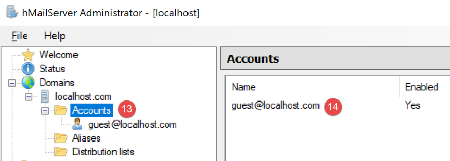
- en [13-14], l’utilisateur créé ;
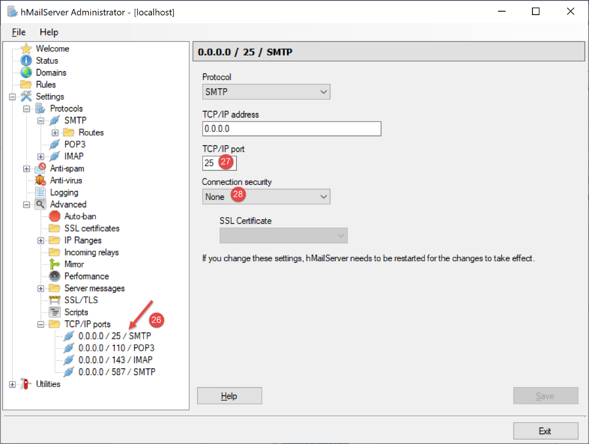
- en [27] le port du service SMTP ;
- en [28], ce service ne nécessite pas d’authentification ;
- en [30], mettez le message de bienvenue que le serveur SMTP enverra à ses clients ;
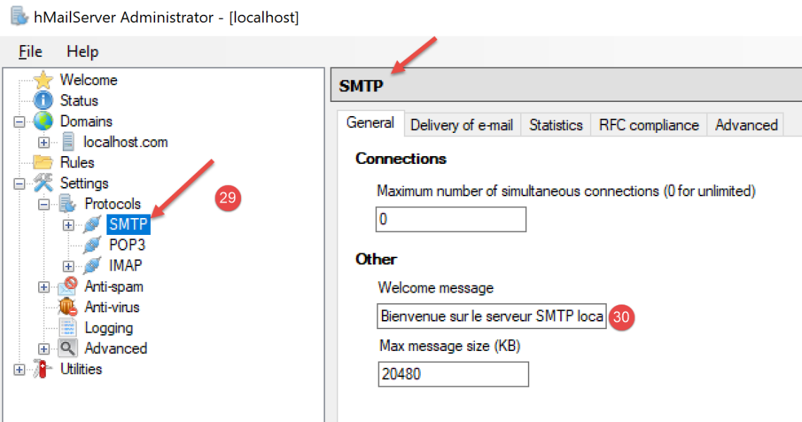
On fait de même avec le serveur POP3 :
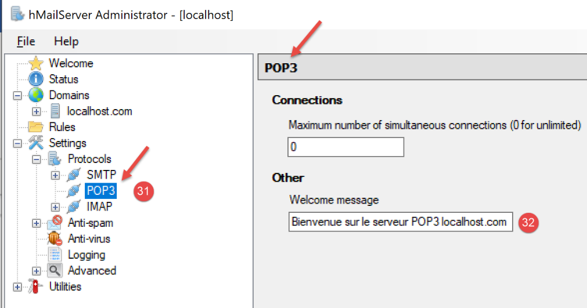
On refait la même chose pour le serveur IMAP :

Nous indiquons le domaine par défaut du serveur [hMailServer] (il peut y en avoir plusieurs) :
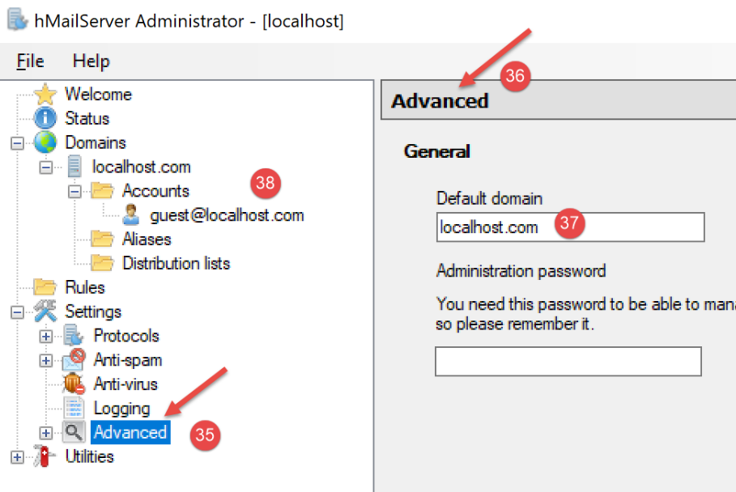
- en [37], indiquez que le domaine par défaut du serveur SMTP est celui que vous avez créé en [38] ; Après avoir sauvegardé cette configuration, vous pouvez la tester de la façon suivante. Ouvrez un terminal PyCharm dans le dossier des utilitaires :
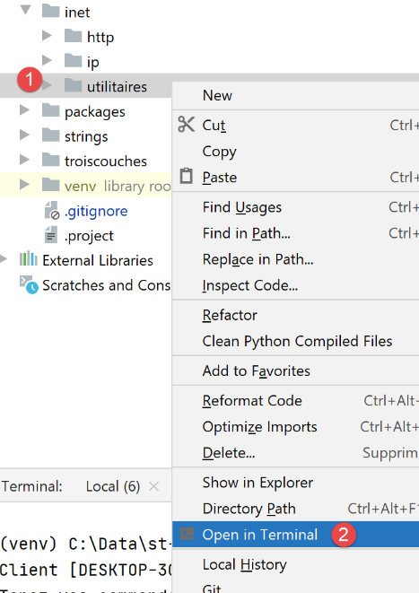
Puis tapez la commande suivante :
- ligne 1 : on se connecte au port 25 de la machine [localhost]. C’est là qu’officie un serveur SMTP non sécurisé du serveur [hMailServer] ;
- ligne 4 : on reçoit le message de bienvenue que nous avons configuré à l’étape 30 précédente ; Le serveur SMTP est donc bien en place. Tapez la commande [quit] pour terminer le dialogue avec le serveur SMTP 25.
Maintenant faisons la même chose avec le port 587 qui est le port par défaut du service SMTP sécurisé de relève du courrier :
- ligne 4, la réponse du serveur SMTP officiant sur le port 587 ; Maintenant faisons la même chose avec le port 110 qui est le port par défaut du service POP3 de relève du courrier :
- ligne 4, on a reçu le message de bienvenue du serveur POP3 ; Maintenant faisons la même chose avec le port 143 qui est le port par défaut du service IMAP de relève du courrier :
- ligne 4, on a reçu le message de bienvenue du serveur IMAP ;
21.5.4. Installation d'un lecteur de courrier
Pour lire le courrier que nous allons envoyer, il nous faut un lecteur de courrier. Pour ceux qui n'en ont pas, nous montrons l'installation et la configuration du lecteur [Thunderbird] :
- en [1] : téléchargez [thunderbird] puis installez-le ;
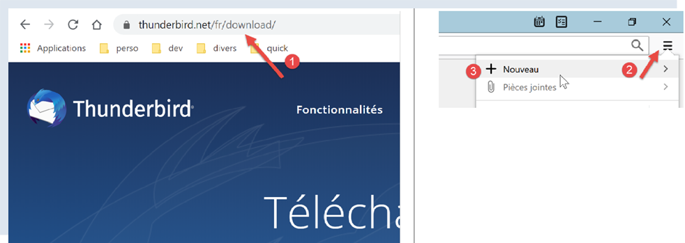
- lancez le serveur de mail [hMailServer] s'il ne l'est pas déjà ;
- en [2-3] : une fois Thunderbird lancé, nous allons créer un compte de messagerie pour l'utilisateur [guest@localhost] du serveur de mail [hMailServer] ;
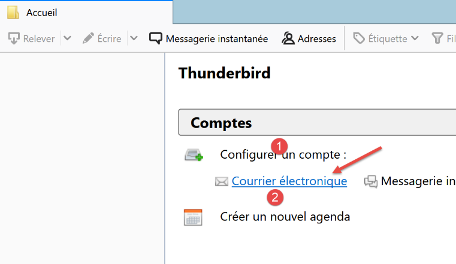
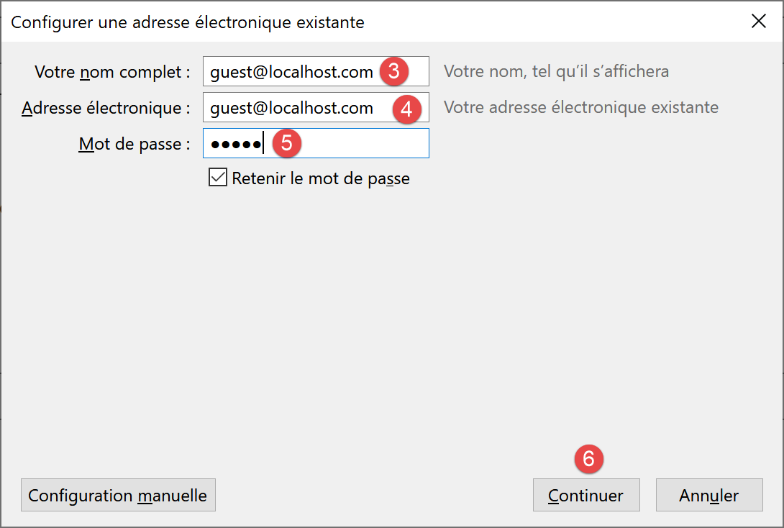
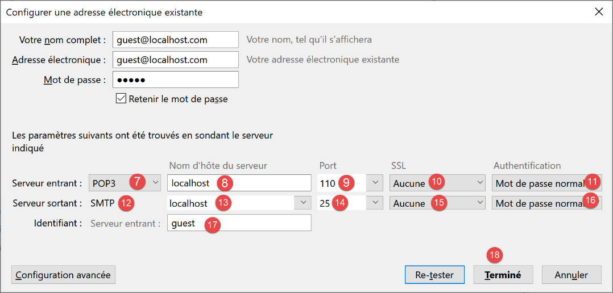
- en [7-11] : le serveur POP3 qui va nous permettre de lire le courrier du serveur de mail [hMailServer] est à l'adresse [localhost] et officie sur le port 110 ;
- en [12-16] : le serveur SMTP qui va nous permettre d'envoyer du courrier de la part des utilisateurs du serveur de mail [hMailServer] est à l'adresse [localhost] et officie sur le port 25 ;
- [18] : on peut tester la validation de cette configuration ;
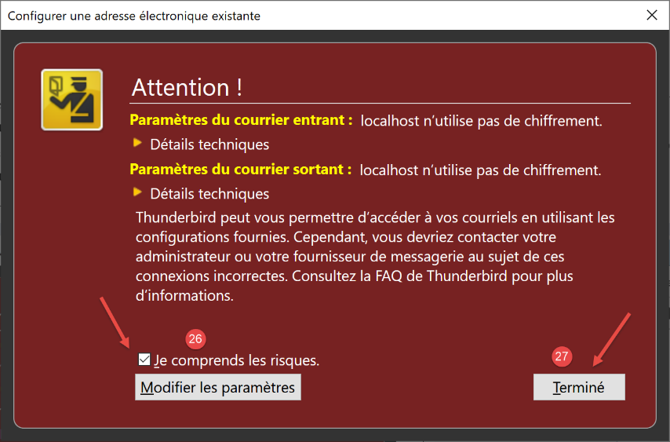
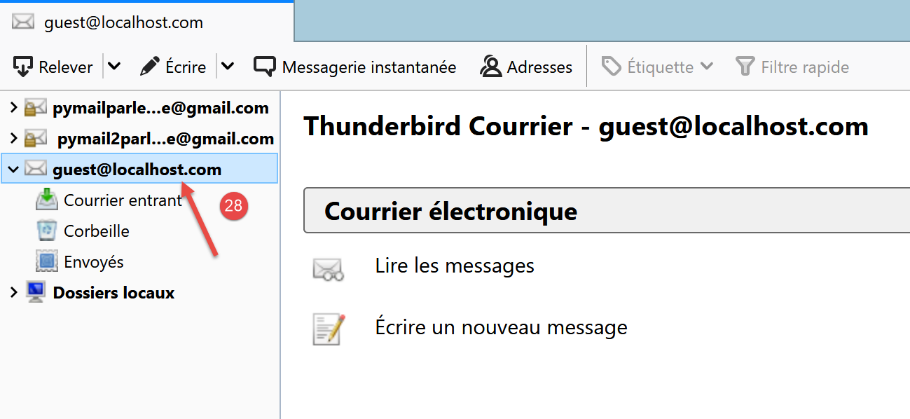
- en [26] : parce qu'on n'a pas de chiffrement SSL, Thunderbird nous avertit que notre configuration comporte des risques ;
-
en [28] : le compte a été créé ; Pour tester le compte créé, nous allons avec Thunderbird :
-
envoyer un mail à l'utilisateur [guest@localhost.com] (protocole SMTP) ;
- lire le courrier reçu par cet utilisateur (protocole POP3) ;
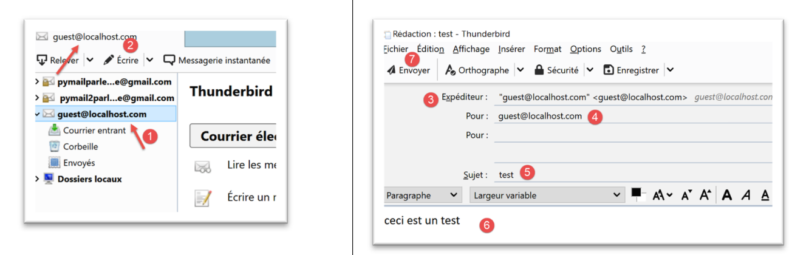
- en [3] : l'expéditeur ;
- en [4] : le destinataire ;
- en [5] : le sujet du mail ;
- en [6] : le contenu du mail ;
- en [7] : pour envoyer le mail ;
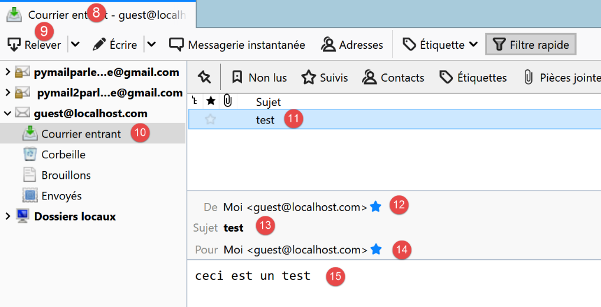
- en [8-9] : on relève le courrier de l'utilisateur [guest@localhost] ;
- en [10-15] : le message reçu ; Nous allons envoyer également du courrier à l'utilisateur [pymailparlexemple@gmail.com]. Créons-lui un compte dans Thunderbird pour lire le courrier qu'il recevra :
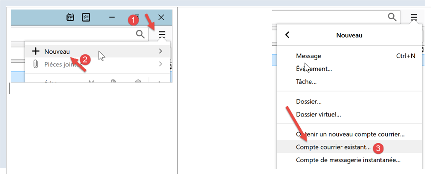
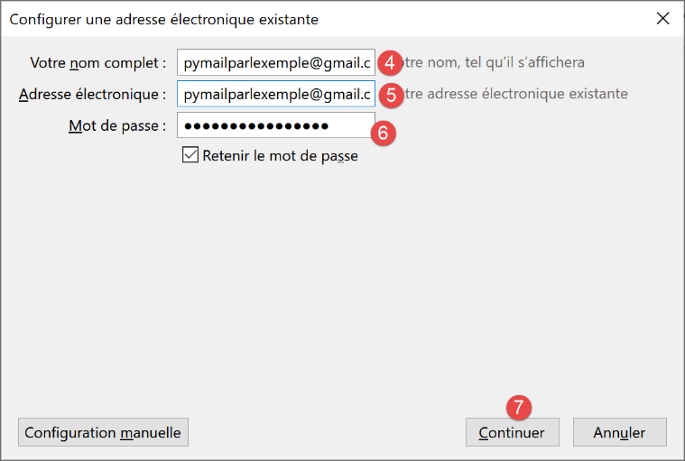
- en [4] : mettez ce que vous voulez ;
- en [5] : l'adresse est [pymailparlexemple@gmail.com] ;
- en [6] : tapez le mot de passe que vous avez donné à cet utilisateur lorsque vous l'avez créé ;
- en [7] : validez cette configuration ;

- en [8] : Thunderbird a récupéré les informations suivantes dans sa base de données ;
- en [9] : le protocole de lecture du courrier n'est plus POP3 mais IMAP. La principale différence entre les deux est que [POP3] ramène le courrier lu sur la machine locale où se trouve le lecteur de courrier et le supprime du serveur distant, alors que [IMAP] conserve le courrier sur le serveur distant ;
- en [10] : identification du serveur SMTP ;
- en [13] : pour avoir davantage d'informations sur les serveurs IMAP et SMTP, on passe en configuration manuelle ;
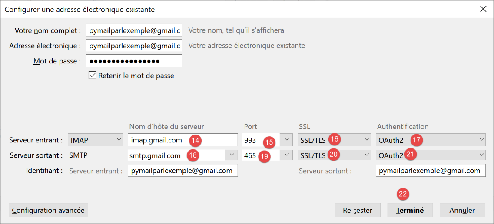
- en [14-17] : les caractéristiques du serveur IMAP ;
- en [18-21] : les caractéristiques du serveur SMTP ;
- en [22] : on termine la configuration ;
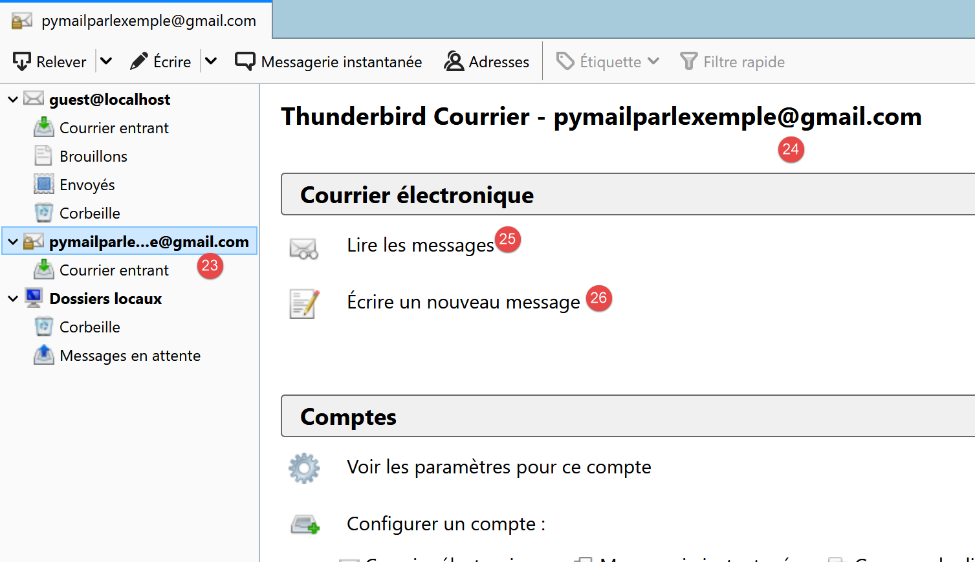
- en [23-24] : le nouveau compte Thunderbird ;
- en [26] : on écrit un nouveau message ;
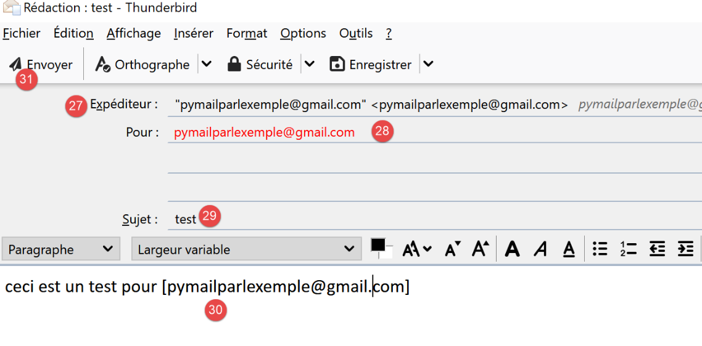
- en [27] : l'expéditeur est [pymailparlexemple@gmail.com] ;
- en [28] : le destinataire est [pymailparlexemple@gmail.com] ;
- en [29-30] : le message ;
- en [31] : pour l'envoyer ;
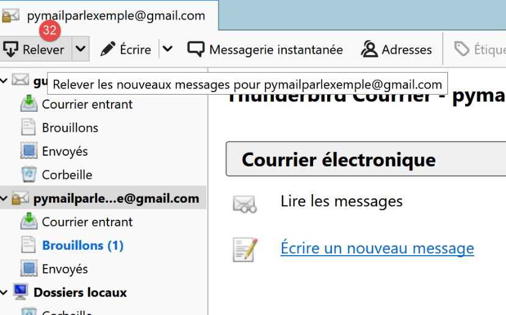
- en [32] : on relève le courrier des différents comptes ;
-
en [33-36] : le courrier reçu par l'utilisateur [pymailparlexemple@gmail.com] Nous créons de même :
-
un nouveau compte Gmail [pymail2parlexemple@gmail.com] ;
- un nouverau compte Thunderbird [pymail2parlexemple@gmail.com] pour relever les messages de l’utilisateur de même nom :
Nous avons désormais les outils pour explorer les protocoles SMTP, POP3 et IMAP. Nous commençons par le protocole SMTP.
21.5.5. Le protocole SMTP
Nous allons découvrir le protocole SMTP en examinant les logs du serveur [hMailServer]. Pour cela, nous les activons avec l’outl [hmailServerAdministrator] :
- en [2], les logs sont activés ;
- en [3-5] : on les active pour les protocoles SMTP, POP3, IMAP ;
- en [7], on demande à les voir ;
- en [8], ouvre le fichier de logs avec un éditeur de texte quelconque ;
Dans l’exemple qui suit, le client sera [Thunderbird] et le serveur sera [hMailServer]. Avec Thunderbird, faites en sorte que l’utilisateur [guest@localhost.com] s’envoie un message à lui-même :
Les logs sont alors les suivants :
Les lignes ci-dessus décrivent le dialogue qui a eu lieu entre le client SMTP (le gestionnaire de courrier Thunderbird) et le serveur SMTP (hMailServer). Les lignes [SENT] indiquent ce que le serveur SMTP a envoyé à son client. Les lignes [RECEIVED] indiquent ce que le serveur SMTP a reçu de son client.
- ligne 1 : juste après la connexion du client au serveur SMTP, celui-ci envoie le message de bienvenue à son client ;
- ligne 2 : le client envoie la commande [EHLO] pour d’identifier. Ici, il donne son adresse IP [127.0.0.1] qui désigne la machine [localhost], ç-à-d la machine qui exécute le client SMTP ;
- ligne 3 : le serveur envoie une série de réponses [250]. [nl] signifie [newline] ç-à-d le caractère \n. Les réponses ont la forme [250-] sauf la dernière qui a la forme [250 ]. C’est ainsi que le client SMTP sait que la réponse du serveur SMTP est terminée et qu’il peut envoyer une commande. La série de commandes [250] avait pour but d’indiquer au client SMTP une série de commandes qu’il pouvait utiliser ;
- ligne 4 : le client SMTP envoie la commande [MAIL FROM : adresse_mail_expéditeur] qui indique qui envoie le message ;
- ligne 5 : le serveur SMTP répond par [250 OK] indiquant qu’il a compris la commande ;
- ligne 6 : le client SMTP envoie la commande [RCPT TO : adresse_mail_destinataire] pour indiquer l’adresse du destinataire ;
- ligne 7 : de nouveau le serveur SMTP indique qu’il a compris la commande ;
- ligne 8 : le serveur SMTP envoie la commande [DATA]. Cela veut dire qu’il va envoyer le contenu du message ;
- ligne 9 : le serveur SMTP indique par la réponse [354 OK] qu’il est prêt à recevoir le message. Le texte [send .] indique que le client SMTP doit terminer son message par une ligne ne contenant qu’un unique point ;
- ce qu’on ne vois pas ensuite, c’est que le client SMTP envoie son message. Les logs ne l’affichent pas ;
- ligne 10 : le client SMTP a envoyé le point qui indique la fin du message. Le serveur SMTP lui répond qu’il a mis le message en file d’attente (queued) ;
- le client SMTP lui envoie la comande [QUIT] pour indiquer qu’il va fermer la connexion ;
- ligne 12 : le serveur lui répond ; Maintenant que nous connaissons le dialogue client / serveur du protocole SMTP, essayons de le reproduire avec notre client [RawTcpClient]. Nous utilisons un terminal PyCharm :
Etudions un nouvel exemple :
- le client A sera le client TCP générique [RawTcpClient] ;
- le serveur B sera le serveur de mails [hMailServer] ;
- le client A demandera au serveur B de distribuer un courrier envoyé par l’utilisateur [guest@localhost.com] pour lui-même ;
- nous vérifierons que le destinataire a bien reçu le mail envoyé ; Nous lançons le client de la façon suivante :
- ligne [1], on se connecte sur le port 25 de la machine locale, là où opère le service SMTP de [hMailServer]. l’argument [--quit bye] indique que l’utilisateur quittera le programme en tapant la commande [bye]. Sans cet argument, la commande de fin du programme est [quit]. Or [quit] est également une commande du protocole SMTP. Il nous faut donc éviter cette ambiguïté ;
- ligne [2], le client est bien connecté ;
- ligne [3], le client attend des commandes tapées au clavier ;
- ligne [4], le serveur lui envoie son message de bienvenue ; Nous continuons le dialogue de la façon suivante :
- en [5], le client envoie la commande [EHLO nom-de-la-machine-client]. Le serveur lui répond par une suite de messages de la forme [250-xx] (6). Le code [250] indique le succès de la commande envoyée par le client ;
- en [10], le client indique l’expéditeur du message, ici [guest@localhost.com] ;
- en [11], la réponse du serveur ;
- en [12], on indique le destinataire du message, ici l’utilisateur [guest@localhost.com] ;
- en [13], la réponse du serveur ;
- en [14], la commande [DATA] indique au serveur que le client va envoyer le contenu du message ;
- en [15], la réponse du serveur ;
- en [16-22], le client doit envoyer une liste de lignes de texte terminée par une ligne ne contenant qu’un unique point. Le message peut contenir des lignes [Subject:, From:, To:] (16-18) pour définir respectivement le sujet du message, l’expéditeur, le destinataire ;
- en [19], les entêtes précédents doivent être suivis d’une ligne vide ;
- en [20-21], le texte du message ;
- en [22], la ligne ne contenant qu’un unique point qui indique la fin du message ;
- en [23], une fois que le serveur a reçu la ligne ne contenant qu’un unique point, il met le message en file d’attente ;
- en [24], le client indique au serveur qu’il a fini ;
- en [25], on constate que le serveur a fermé la connexion qui le liait au client ; Maintenant vérifions avec Thunderbird que l’utilisateur [guest@localhost.com] a bien reçu le message :
- en [1-6], on voit que l’utilisateur [guest@localhost.com] a bien reçu le message ; Finalement, notre client [RawTcpClient] a réussi à envoyer un message via le serveur SMTP [localhost]. Maintenant, utilisons la même méthode pour envoyer un message à [pymailparlexemple@gmail.com] :
- ligne 1 : on utilise le serveur SMTP de Gmail qui opère sur le port 587 ;
- ligne 15 : on est bloqués parce que le serveur SMTP nous demande de démarrer une connexion sécurisée ce qu’on ne sait pas faire. Contrairement à l’exemple précédent, le serveur [smtp.gmail.com] (ligne 1) demande une authentification. Il n’accepte comme clients que les utilisateurs enregistrés dans le domaine [gmail.com]. Cette authentification est sécurisée et a lieu au sein d’une connexion cryptée. Le premier exemple nous a donné les bases pour construire un client SMTP basique en Python. Le deuxième nous a montré que certains serveurs SMTP (la plupart en fait) nécessitent une authentification faite avec une connexion chiffrée.
21.5.6. scripts [smtp/01] : un client SMTP basique
Nous allons reproduire en Python ce que nous avons appris précédemment du protocole SMTP.
Le fichier [smtp/01/config] configure l’application de la façon suivante :
- lignes 10-35 : une liste de mails à envoyer. Pour chacun d’eux on précise les informations suivantes :
- [description] : un texte décrivant le mail ;
- [smtp-server] : le serveur SMTP à utiliser ;
- [smtp-port] : son port de service ;
- [from] : l’expéditeur du mail ;
- [to] : le destinataire du mail ;
- [subject] : le sujet du mail ;
- [content-type] : l’encodage du mail ;
- [message] : le message du mail ; Le code [01/main] du client SMTP est le suivant :
1 2 3 4 5 6 7 8 9 10 11 12 13 14 15 16 17 18 19 20 21 22 23 24 25 26 27 28 29 30 31 32 33 34 35 36 37 38 39 40 41 42 43 44 45 46 47 48 49 50 51 52 53 54 55 56 57 58 59 60 61 62 63 64 65 66 67 68 69 70 71 72 73 74 75 76 77 78 79 80 81 82 83 84 85 86 87 88 89 90 91 92 93 94 95 96 97 98 99 100 101 102 103 104 105 106 107 108 109 110 111 112 113 114 115 116 117 118 119 120 121 122 123 124 125 126 127 128 129 130 131 132 133 134 135 136 137 138 139 140 141 142 143 144 145 146 147 148 149 150 151 152 153 154 155 156 157 158 159 | |
Commentaires
- lignes 134-136 : on configure l’application ;
- lignes 139-151 : on tarite tous les mails trouvés dans la configuration ;
- lignes 141-143 : on affiche ce qu'on va faire ;
- lignes 144-149 : on définit le message à envoyer. Le message [message] est précédé des entêtes [From, To, Subject, Content-type] ;
- ligne 151 : l’envoi du mail est assuré par la fonction [sendmail] qui admet deux paramètres :
- [mail] : le dictionnaire contenant les informations nécessaires à l’envoi du mail ;
- [verbose] : un booléen indiquant si les échanges client / serveur doivent être ou non logués sur la console ;
- lignes 154-156 : on arrête toutes les exceptions qui sortent de la fonction [sendmail]. Elles sont affichées ;
- ligne 6 : [mail] est le dictionnaire décrivant le mail à envoyer ;
- ligne 14 : dans le protocole SMTP, le client doit envoyer son non. On récupère ici le nom de la machine locale qui va servir de client ;
- ligne 16 : connexion au serveur SMTP à qui le message va être envoyé ;
- lignes 22-23 : si la connexion s'est faite avec le serveur SMTP, celui-ci va envoyer un message de bienvenue qu'on lit ici ;
- la fonction [sendmail] envoie ensuite les différentes commandes que doit envoyer un client SMTP :
- lignes 24-25 : la commande EHLO ;
- lignes 26-27 : la commande MAIL FROM: ;
- lignes 28-29 : la commande RCPT TO: ;
- lignes 30-31 : la commande DATA ;
- lignes 32-41 : envoi du message (From, To, Subject, Content-type, texte) ;
- lignes 42-43 : envoi du point final ;
- lignes 44-457 : la commande QUIT qui termine le dialogue du client avec le serveur SMTP ;
- l'exécution de [sendmail] s'exécute dans un [try / finally] qui laisse remonter toutes les exceptions au code appelant. On sait que celui-ci les arrête toutes pour les afficher ;
- lignes 48-50 : libération des ressources ;
- ligne 54 : la fonction [send_command] est chargée d’envoyer les commandes du client au serveur SMTP. Elle admet quatre paramètres :
- [connexion] : la connexion qui relie le client au serveur ;
- [commande] : la commande à envoyer ;
- [verbose] : si TRUE alors les échanges client / serveur sont logués sur la console ;
- [with_rclf] : si TRUE, envoie la commande terminée par la séquence \r\n. C’est nécessaire pour toutes les commandes du protocole SMTP, mais [send_command] sert aussi à envoyer le message. Là on n’ajoute pas la séquence \r\n ;
- ligne 62 : la commande n'est envoyée que si elle est non vide ;
- lignes 65-66 : la commande est envoyée au serveur sous la forme d’une chaîne d’octets UTF-8 ;
- lignes 70-71 : lecture de de l’ensemble des lignes de la réponse. On suppose qu’elle fait moins de 1000 caractères. La réponse peut comporter plusieurs lignes. Chaque ligne a la forme XXX-YYY où XXX est un code numérique sauf la dernière ligne de la réponse qui a la forme XXX YYY (absence du caractère -) ;
- lignes 76 : lecture du code d'erreur XXX de la 1re ligne ;
- lignes 78-80 : si le code numérique XXX est supérieur à 500, alors le serveur a renvoyé une erreur. On lance alors une exception ; Résultats
L’exécution du script donne les résultats console suivants :
- lignes 3-30 : l’utilisation du serveur SMTP [hMailServer] pour envoyer un mail à [guest@localhost] se passe bien ;
- lignes 32-46 : l’utilisation du serveur SMTP [smtp.gmail.com] pour envoyer un mail à [pymailparlexemple@gmail.com] ne se passe pas bien : en ligne 45, le serveur SMTP envoie un code d’erreur 530 avec un message d’erreur. Celui-ci indique que le client SMTP doit au préalable s’authentifier via une connexion sécurisée. Notre client ne l’a pas fait et est donc refusé ; Les résultats dans Thunderbird sont les suivants :
21.5.7. scripts [smtp/02] : un lient SMTP écrit avec la bibliothèque [smtplib]
Le client précédent souffre d'au moins deux insuffisances :
- il ne sait pas utiliser une connexion sécurisée si le serveur la réclame ;
- il ne sait pas joindre des attachements au message ; Nous allons traiter la première insuffisance dans le script [smtp/02]. Dans notre nouveau script nous allons utiliser le module Python [smtplib].
Le script [smtp/02/main] utilisera le fichier de configuration jSON [smtp/02/config] suivant :
On retrouve les mêmes rubriques que dans le fichier [smtp/01/config] avec deux rubriques supplémentaires lorsque el serveur SMTP demande une authentification :
- ligne 31, [user] : le nom de l’utilisateur qui authentifie la connexion ;
- ligne 32, [password] : son mot de passe ; Ces deux rubriques ne sont présentes que si le serveur SMTP contacté exige une authentification. Celle-ci se fait alors au-travers d'une connexion sécurisée.
Le code du script [smtp/02/main.py] est le suivant :
Commentaires
- lignes 8-35 : seule la fonction [sendmail] est utilisée. Elle va désormais utiliser le module [smtplib] (ligne 2) ;
- ligne 16 : connexion au serveur SMTP ;
- ligne 18 : si [verbose=True], les échanges client / serveur seront affichés sur la console ;
- lignes 20-24 : on fait l'éventuelle authentification si le serveur SMTP l'exige ;
- ligne 22 : l'authentification se fait au travers d'une connexion sécurisée ;
- ligne 24 : authentification ;
- lignes 26-33 : envoi du message. Le dialogue vu avec le script [smtp/01/main] va alors se dérouler. S'il y a eu authentification, il se déroulera au sein d'une connexion sécurisée ;
-
ligne 35 : on termine le dialogue client / serveur ; Avant d’exécuter le script [smtp/02/main], vous devez modifier la configuration du compte Gmail [pymailparlexemple@gmail.com] :
-
connectez-vous au compte Gmail [pymailparlexemple@gmail.com] ;
- modifiez la configuration suivante :
- en [2], autorisez les applications moins sécurisées à accéder au compte ; Faites la même chose avec le second compte Gmail [pymail2parlexemple@gmail.com].
Résultats
Lorsqu’on exécute le script [smtp/02/main] on obtient les résultats console suivants :
- ligne 40 : le client [smtplib] commence le dialogue pour établir une liaison cryptée avec le serveur SMTP, ce qu’on n’avait pas su faire dans le script [smtp/main/01] ;
- sinon on retouve les commandes connues du protocole SMTP ; Si on consulte le compte Gmail de l’utilisateur [pymail2parlexemple] on a la chose suivante :
21.5.8. scripts [smtp/03] : gestion des fichiers attachés
Nous complétons le script [smtp/02/main] afin que le mail envoyé puisse avoir des fichiers attachés.
Le script [smtp/03/main] est configuré par le script [smtp/03/config] suivant :
Le fichier [smtp/03/config] ne diffère du fichier [smtp/02/config] utilisé précédemment que par la présence facultative d'une liste [attachments] (lignes 30-32) qui désigne la liste des fichiers à attacher au message à envoyer.
Le script [smtp/03/main] est le suivant :
Commentaires
- lignes 18-32 : la fonction [sendmail] reste ce qu'elle était lorsqu'il n'y avait pas d'attachements ;
- ligne 35 : le code qui suit est tiré d'une documentation officielle de Python ;
- ligne 36 : le message qui va être envoyé va comprendre plusieurs parties : du texte et des fichiers attachés. On appelle cela un message [Multipart] ;
- lignes 37-40 : on trouve dans le message [Multipart] les champs habituels de tout mail ;
- ligne 42 : les différentes parties du message [Multipart] [msg] sont attachées au message par la méthode [msg.attach] (ligne 81). Les parties attachées peuvent être de toute nature. Celles-ci sont caractérisées par un type MIME. Le type MIME d'un texte ordinaire est le type [MIMEText] ;
- lignes 44-81 : on va attacher au message [msg Multipart] tous les attachements du message à envoyer (ligne 81) ;
- ligne 44 : [path] représente le chemin absolu du fichier à attacher ;
- ligne 47 : pour trouver le type MIME à utiliser pour la partie à attacher, on va utiliser le suffixe (.docx, .php…) du fichier à attacher. La méthode [mimetypes.guess_type] fait ce travail. Elle rend deux informations :
- [ctype] : le type MIME du fichier ;
- [encoding] : une information sur son encodage ;
- lignes 49-52 : au cas où on ne peut pas déterminer le type MIME du fichier, on dit que c'est un fichier binaire (ligne 52) ;
- ligne 54 : le type MIME d’un fichier se décompose en type principal / type secondaire, par exemple [application/pdf]. On sépare ces deux éléments ;
- lignes 56-76 : on traite différents cas selon la valeur du type MIME principal. Par exemple, dans le cas [application/pdf] d'un fichier PDF, on va exécuter les lignes 70-76 :
- lignes 56-59 : le cas où le fichier attaché est un fichier texte. Dans ce cas on crée un élément de type [MIMEText] de contenu [fp.read] ;
- lignes 60-62 : le cas où le fichier contient une image. Dans ce cas on crée un élément de type [MIMEImage] de contenu [fp.read] ;
- lignes 63-65 : le cas où le fichier est un fichier audio. Dans ce cas on crée un élément de type [MIMEAudio] de contenu [fp.read] ;
- lignes 66-69 : le cas où le fichier est un mail. Dans ce cas on crée un élément de type [MIMEMessage] (ligne 69) de contenu [email.message_from_bytes(fp.read())]. Contrairement aux cas précédents où le contenu de l’élément MIME était le contenu binaire du fichier associé, ici le contenu de l’élément MIMEMessage est de type [email.message.Message] ;
- lignes 70-76 : les autres cas. Cela comprend par exemple les fichiers Word et PDF de notre exemple ;
- ligne 72 : le fichier à attacher est ouvert en mode binaire (rb=read binary) ;
- ligne 74 : [fp.read] lit la totalité du fichier binaire ;
- lignes 72-74 : la structure [with open(…) as file] fait deux choses :
- elle ouvre le fichier et lui donne le descripteur [file] ;
- elle assure qu'à la sortie du [with], erreur ou pas, le descripteur [file] sera fermé. C'est donc une alternative à la structure [try file=open(…)/ finally] ;
- ligne 73 : on crée un nouvel élément [part] à incorporer au message Multipart. On utilise ici la classe [MIMEBase] et on passe au constructeur les éléments [maintype, subtype] déterminés ligne 54 ;
- ligne 74 : l’élement à incorporer dans le message Multipart doit avoir un contenu. Celui-ci peut être initialisé avec la méthode [set_payload] ;
- lignes 75-76 : les fichiers attachés doivent subir un encodage 7 bits. En effet, historiquement certains serveurs SMTP ne supportaient que des caractères codés sur 7 bits. Ici c’est le codage appelé ‘Base64’ qui est utilisé ;
- ligne 77 : à partir de cette ligne, le traitement est comment à tous les types MIME que nous avons créés aux lignes 56-76 [MIMEMessage, MIMEImage, MIMEAudio, MIMEBase, MIMEText] ;
- ligne 79 : l’élément à ajouter dans le message Multipart a un entête le décrivant. On indique ici que l’élément ajouté correspond à un fichier attaché. Le nom de ce fichier est le troisième paramètre passé à la méthode [add_header]. Le nom de ce fichier est souvent utilisé par les lecteurs de courrier pour enregistrer, sous ce nom, le fichier attaché dans le système de fichiers du lecteur. On a pour l’instant travaillé avec le nom absolu du fichie attaché. Ici on passe simplement son nom sans son chemin (ligne 78) ;
- ligne 81 : le binaire du fichier est incorporé dans le message [msg Multipart] ;
- ligne 83 : lorsque tous les parties du message ont été attachées au [msg Multipart], celui-ci est envoyé ; Résultats
Si on exécute le script [smtp/03/main] avec le fichier [smtp/02/config] déjà présenté, le compte [pymail2parlexemple@gmail.com] reçoit ceci :
On voit les fichiers attachés en [4, 9-11].
Montrons un exemple maintenant avec un mail attaché. Nous allons sauvegarder le mail reçu en [3] ci-dessus :
Nous sauvegardons le mail sous le nom [mail attaché 1.eml] dans le dossier [smtp/03/attachments].
Nous modifions maintenant le fichier [smtp/03/config] de la façon suivante :
- ligne 33, nous avons ajouté un attachement ; Maintenant nous exécutons de nouveau le script [smtp/03/main]. Cela donne le résultat suivant dans la boîte à lettres de l’utilisateur [pymail2parlexemple@gmail.com] :
- en [1], le mail reçu ;
- en [2] : le texte du message ;
- en [3] : le texte du mail attaché ;
- en [4] : Thunderbird a trouvé 5 pièces jointes :
- [fichier attaché.docx] ;
- [fichier attaché.pdf] ;
- [mail attaché 1.eml]. Cette pièce jointe est elle-même un mail contenant deux pièces jointes :
- [fichier attaché.docx] ;
- [fichier attaché.pdf] ;
21.6. Le protocole POP3
21.6.1. Introduction
Pour lire les mails entreposés dans un serveur de mails, deux protocoles existent :
- le protocole POP3 (Post Office Protocol) historiquement le 1er protocole mais peu utilisé maintenant ;
- le protocole IMAP (Internet Message Access Protocol) protocole plus récent que POP3 et le plus utilisé actuellement ; Pour découvrir le protocole POP3, nous allons utiliser l’architecture suivante :
- [Serveur B] sera selon les cas :
- un serveur POP3 local, implémenté par le serveur de mail [hMailServer] ;
- le serveur [pop.gmail.com] qui est le serveur POP3 du gestionnaire de mails [gmail.com] ;
- [Client A] sera un client POP3 de diverses formes :
- le client [RawTcpClient] pour découvrir le protocole POP3 ;
- un script Python rejouant le protocole POP3 du client [RawTcpClient] ;
- un script Python utilisant des modules Python permettant de gérer les pièces attachées ainsi que l'utilisation d’une connexion chiffrée et authentifiée lorsque le serveur POP3 l'exige ;
21.6.2. Découverte du protocole POP3
Comme nous l’avons fait avec le protocole SMTP, nous allons découvrir le protocole POP3 à l’aide des logs du serveur de mails [hMailServer]. Il faut ici lancer ce serveur.
Avec Thunderbird, nous allons :
- envoyer un mail à l’utilisateur [guest@localhost.com] ;
- lire la boîte à lettre de cet utilisateur ;
En [3-6] ci-dessus, le message reçu par l’utilisateur [guest@localhost.com].
Nous examinons maintenant les logs du serveur [hMailServer]. Pour cela nous utilisons l’outil d’administration [hMailServer Administrator] :
Les logs POP3 sont les suivants (les dernières lignes dans le fichier de logs du jour) :
- ligne 1 : le serveur POP3 envoie un message de bienvenue au client (Thunderbird) qui vient de se connecter ;
- ligne 2 : le client envoie la commande [CAPA] (capabilities) pour demander la listes des commandes qu’il peut utiliser ;
- ligne 3 : le serveur lui répond qu’il peut utiliser les commandes [USER, UIDL, TOP]. Le serveur POP commence ses réponses par [+OK] ou [-ERR] pour indiquer qu’il a réussi ou échoué à exécuter la commande du client ;
- ligne 4 : le client envoie la commande [USER guest] pour indiquer qu’il veut consulter la boîte à lettres de l’utilisateur [guest] ;
- ligne 5 : le serveur lui répond [+OK] et demande le mote de passe de [guest] ;
- ligne 6 : le client envoie la commande [PASS password] pour envoyer le mot de passe de l’utilisateur [guest]. Ici le mot de passe est en clair car le serveur POP3 n’a pas imposé de connexion sécurisée. Nous verrons que ce sera différent avec le serveur POP3 de Gmail ;
- ligne 7 : le serveur a validé l’ensemble login / mot de passe. Il indique qu’il bloque la boîte à lettres de l’utilisateur [guest] ;
- ligne 8 : le client lui envoie la commande [STAT] qui demande des informations sur la boîte à lettres ;
- ligne 9 : le serveur lui répond qu’il y a un message de 612 octets. De façon générale, il répond qu’il y a N messages et donne la taille totale de ces messages ;
- ligne 10 : le client envoie la commande [LIST]. Cette commande demande la liste des messages ;
- ligne 11 : le serveur lui envoie la liste des messages sous la forme suivante :
- une ligne récapitulative avec le nombre de messages et leur taille totale ;
- une ligne par message indiquant le n° du message et sa taille ;
- ligne 13 : le client envoie la commande [UIDL] qui demande la liste des messages avec leurs identifiants. En effet, chaque message est repéré par un n° unique au sein du service de mails ;
- ligne 14 : la réponse du serveur. On voit ainsi que le message n° 1 dans la liste a l’identifiant 42 ;
- ligne 15 : le client envoie la commande [RETR 1] qui demande à ce qu’on lui transfère le message n° 1 de la liste ;
- ligne 16 : le serveur POP3 le fait ;
- ligne 17 : le client envoie la commande [QUIT] pour indiquer qu’il va se déconnecter du serveur POP3 ;
- ligne 18 : le serveur va lui également fermer sa connexion avec le client mais auparavant il lui envoie un message d’au-revoir ; Nous allons reproduire maintenant des éléments du dialogue ci-dessus en utilisant le client [RawTcpClient] exécuté dans une fenêtre PyCharm :
Le dialogue est le suivant :
- ligne 1 : on ouvre une connexion avec le port 110 de la machine [localhost]. C’est là qu’opère le service POP3 de [hMailServer] ;
- aux lignes 5, 7, 9, 13, 34, nous utilisons les commandes [USER, PASS, LIST, RETR, QUIT] ;
- ligne 4 : le message de bienvenue du serveur POP3 ;
- ligne 5 : on indique qu’on veut accéder à la boîte à lettres de l’utilisateur [guest] ;
- ligne 7 : on envoie le mot de passe de l’utilisateur [guest] en clair ;
- ligne 9 : on demande la liste des messages de la boîte à lettres ;
- ligne 13 : on demande le message n° 1 ;
- lignes 14-33 : le serveur POP3 envoie le message n° 1 ;
-
ligne 34 : on termine la session ; Voici un résumé de quelques commandes courantes acceptées par un serveur POP3 :
-
la commande [USER] sert à définir l’utilisateur dont on veut lire la boîte mail ;
- la commande [PASS] sert à définir son mot de passe ;
- la commande [LIST] demande la liste des messages présents dans la boîte à lettres de l’utilisateur ;
- la commande [RETR] demande à voir le message dont on passe le n° ;
- la commande [DELE] demande la suppression du message dont on passe le n° ;
-
la commande [QUIT] indique au serveur qu’on a terminé ; La réponse du serveur peut prendre plusieurs formes :
-
une ligne unique commençant par [+OK] pour indiquer que la commande précédente du client a réussi ;
- une ligne unique commençant par [-ERR] pour indiquer que la commande précédente du client a échoué ;
- plusieurs lignes où :
- la 1re ligne commence par [+OK] ;
- la dernière ligne est constituée d’un unique point ;
21.6.3. scripts [pop3/01] : un client POP3 basique
Comme le procole POP3 a la même structure que le protocole SMTP, le script [pop3/01/main.py] est un portage du script [smtp/01/main.py]. Il aura le fichier de configuration [pop3/01/config.py] suivant :
- lignes 3-24 : la liste des boîtes à lettres à consulter. Ici il n’y en a qu’une ;
- lignes 4-12 : significations des éléments du dictionnaire définissant chacune des boîtes à lettres ;
- ligne 15 : le serveur POP3 interrogé est le serveur local [hMailServer] ;
- lignes 17-18 : on veut lire la boîte à lettres de l’utilisateur [guest@localhost] ;
- ligne 19 : on lira au plus 10 mails ;
- ligne 20 : le client aura un délai d'attente d'une réponse du serveur d’au plus 1 seconde ;
- ligne 21 : le type d'encodage des messages lus ;
- ligne 22 : on ne supprimera pas les messages téléchargés ; Le script [pop3/01/main.py] est le suivant :
Commentaires
Comme nous l’avons dit, [pop3/01/main.py] est un portage du script [smtp/01/main.py] que nous avons déjà commenté. Nous ne commenterons que les principales différences :
- ligne 64 : la fonction [readmails] est chargée de lire les mails d'une boîte aux lettres. Les informations pour se connecter à cette boîte à lettres sont dans le dictionnaire [mailbox]. Le second paramètre [True] est le paramètre [Verbose] qui demande ici un suivi des échanges client / serveur ; La fonction [readmails] est la suivante :
Commentaires
- lignes 8-14 : on récupère les informations de configuration de la boîte à lettres à consulter ;
- lignes 19-20 : ouverture d’une connexion avec le serveur POP3 ;
- lignes 26-27 : lecture du message de bienvenue envoyé par le serveur ;
- lignes 28-29 : on envoie la commande [USER] pour identifier l’utilisateur dont on veut les mails ;
- lignes 30-31 : on envoie la commande [PASS] pour donner le mot de passe de cet utilisateur ;
- lignes 32-33 : on envoie la commande [LIST] pour savoir combien il y a de mails dans la boîte à lettres de cet utilisateur. La fonction [sendCommand] renvoie la première ligne de la réponse du serveur. Dans celle-ci le serveur indique combien il y a de messages dans la boîte à lettres ;
- lignes 34-36 : on récupère le nombre de messages dans la 1re ligne de la réponse ;
- lignes 39-46 : on boucle sur chacun des messages. Pour chacun d’eux on émet deux commandes :
- RETR i : pour récupérer le message n° i (lignes 40-41) ;
- DELE i : pour le supprimer si la configuration demande que les messages lus soient supprimés du serveur (lignes 43-44) ;
- lignes 47-48 : on envoie la commande [QUIT] pour dire au serveur qu’on a terminé ; La fonction [send_command] est la suivante :
Commentaires
- lignes 13-18 : la commande [command] n'est envoyée au serveur POP3 que si elle est non vide. Ce cas est nécessaire pour lire le message de bienvenue du serveur POP3 qu'il envoie alors même que le client n'a pas encore envoyé de commandes ;
- lignes 19-21 : on lit la socket comme si elle était un fichier texte. Cela va nous permettre d'utiliser la méthode [readline] (ligne 24) et de lire ainsi le message ligne par ligne. On utilise la clé [encoding] du dictionnaire [mailbox] pour indiquer le codage des lignes qui vont être lues ;
- ligne 24 : on lit la 1re ligne de la réponse ;
- lignes 28-32 : on gère le cas d'une éventuelle erreur. Celles-ci sont du type [-ERR invalid password, -ERR mailbox unknown, -ERR unable to lock mailbox…] ;
- ligne 32 : on lance une exception avec le message de l'erreur ;
- ligne 35 : seules les commandes [list, retr] peuvent avoir des réponses à plusieurs lignes ;
- lignes 36-45 : dans le cas d'une réponse à plusieurs lignes, on affiche toutes les lignes reçues (lignes 42-43) jusqu'à recevoir la dernière ligne (ligne 45) ;
- ligne 46 : on rend la 1re ligne lue car dans le cas de la commande [LIST], elle comporte le nombre de messages présents dans la boîte à lettres ; Résultats
Prenons l'exemple précédent. Avec Thunderbird, nous avions envoyé le message suivant à l'utilisateur [guest@localhost] (il faut que le serveur hMailServer soit lancé) :
A l’exécution, on obtient les résultats suivants :
-
lignes 15-31 : on récupère correctement le message envoyé à [guest@localhost]. Nous avons là un client POP3 basique auquel il manque certaines capacités :
-
la possibilité de dialoguer avec un serveur POP3 sécurisé ;
- la possibilité de lire les pièces attachées à un message ; Nous allons implémenter ces deux possibilités avec un nouveau script qui sera cette fois plus complexe.
21.6.4. scripts [pop3/02] : client POP3 avec les modules [poplib] et [email]
Nous allons écrire un client POP3 permettant de gérer les pièces attachées ainsi que la communication avec des serveurs sécurisés. Par ailleurs, nous sauvegarderons dans des fichiers, les messages et leurs pièces attachées.
Nous allons utiliser deux modules Python :
- [poplib] : qui va assurer le protocole POP3 ;
- [email] : qui regroupe de nombreux sous-modules qui vont nous permettre d'analyser les messages reçus. Chaque message est une chaîne de caractères structurée dans laquelle on peut retrouver :
- les entêtes du message [From, To, Subject, Return-Path…] ;
- le message dans ses versions texte et éventuellement HTML ;
- les pièces attachées ;
Le script [inet/pop3/02/main] [1] est configuré par le fichier [inet/pop3/02/config] [2] et utilise le module [inet/shared/mail_parser] [3].
Le fichier [pop3/02/config] est le suivant :
Le fichier définit la liste des boîtes à lettres à consulter et fixe le Python Path de l’application.
Il n’y a ici qu’une unique boîte à lettres :
- lignes 22-23 : l'utilisateur dont on veut lire les mails ;
- lignes 20-21 : le nom et le port du serveur POP3 qui stocke les mails de cet utilisateur ;
- ligne 24 : le nombre maximum de mails à récupérer. En effet, si vous essayez ce script sur votre propre boîte mail, vous ne voudrez sans doute pas récupérer les centaines de mails qui s'y trouvent ;
- ligne 25 : booléen qui indique si après la lecture d'un mail, on doit supprimer celui-ci (delete=True) ;
- ligne 26 : l’attribut [ssl] à True signifie que le serveur POP3 défini aux lignes 20-21 utilise une connexion cryptée ;
- ligne 27 : le temps d'attente maximal des réponses du serveur exprimé en secondes ;
- ligne 28 : le dossier dans lequel ranger les mails lus. Il sera créé s'il n'existe pas. On a ici un nom relatif. A l'exécution, il sera relatif au dossier à partir duquel vous lancez le script. Avec [Pycharm], ce dossier sera celui du script [pop3/02] ; Le script [pop3/02/main] est le suivant :
- lignes 17-36 : la partie [main] du script est analogue à celle du script [pop3/01] ; La fonction [readmails] est la suivante :
Commentaires
- lignes 6-7 : on importe la fonction [mail_parser.save_message] utilisée ligne 80 ;
- le code de la fonction est encapsulée dans un try (ligne 22)/ finally (ligne 88). Ainsi toutes les exceptions remontent au code principal qui les arrêtent et les affichent ;
- lignes 11-18 : on récupère les informations de configuration de la boîte à lettres ;
- lignes 23-33 : tous les messages seront stockés dans le dossier [output/user] où [output] et [user] sont définis dans la configuration. On crée donc successivement les dossiers [output] puis [output/user]. Pour créer ce dernier, on le supprime d'abord ligne 31. [shutil] est un module qu'il faut importer. [shutil.rmtree(dir)] supprime le dossier [dir] et tout ce qu'il contient ;
- pour toutes les opérations sur les fichiers système on utilise le module [os] qu'il faut également importer ;
- lignes 34-38 : on ouvre une connexion avec le serveur POP3. Si le serveur est sécurisé, on utilise la classe [poplib.POP3_SSL] sinon la classe [poplib.POP3]. L'attribut [ssl] utilisé ligne 35 provient de la configuration de la boîte à lettres ;
- ligne 45 : on fixe un niveau de logs :
- 0 : pas de logs ;
- 1 : les commandes émises par le client POP3 sont loguées ;
- 2 : logs détaillés. On voit également ce que reçoit le client POP3 ;
- ligne 47 : après la connexion, leserveur POP3 envoie un message de bienvenue. On lit celui-ci ;
- lignes 48-49 : commande USER du protocole POP3 ;
- lignes 50-51 : commande PASS du protocole POP3 ;
- lignes 52-53 : commande LIST du protocole POP3. La réponse est un tuple (response, ['mesg_num octets'…], octets), par exemple liste=(b'+OK 3 messages (3859 octets)', [b'1 584', b'2 550', b'3 2725'], 22). On voit que les deux premiers éléments du tuple sont des bytes (préfixe b). liste[1] est un tableau où chaque élément est une suite d'octets contenant deux informations : le n° du message et sa taille en octets ;
- ligne 56 : de ce qui précède on déduit que le nombre de messages dans la boîte à lettres peut être obtenu par [len[liste1]] ;
- lignes 59-84 : on boucle sur chacun des messages. On s'arrête lorsque tous ont été lus ou qu'on a atteint le nombre maximal de mails fixé par configuration ;
- ligne 61 : élément courant du tableau liste[1], donc quelque chose comme b'1 584', une suite d'octets ;
- ligne 63 : on passe de la suite d'octets à une chaîne de caractères. On a maintenant la chaîne '1 584' ;
- ligne 66 : on récupère le n° du message, ici la chaîne '1' ;
-
ligne 68 : on émet la commande POP3 RETR num. On récupère une réponse du genre :
-
message est un tuple de trois éléments ;
- message[1] est un tableau de lignes. Chaque ligne est une suite d'octets (préfixe b). Le message complet est formé par cet ensemble de lignes ;
- [Return-Path, Received, To, Subject, Message-ID, Content-Type, Content-Transfer-Encoding, Content-Language] sont les entêtes du message. Chacun donne une information sur le message reçu. Ces informations vont permettre de récupérer le corps du message (avant-dernier élément du tableau message[1]) ;
- lignes 71-73 : on crée la chaîne [strMessage] formée de toutes les lignes du message. On a maintenant le message sous forme d'une chaîne de caractères. Ce message peut contenir d'autres messages ainsi que des pièces attachées. Car les pièces attachées le sont sous la forme d'une chaîne de caractères. Donc un point à retenir, c'est qu'un mail est au départ une chaîne de caractères et c'est cette chaîne de caractères qu'il faut analyser pour en extraire les pièces attachées, les éventuels autres messages encapsulés et bien sûr le corps du message, ce qu'a écrit l'expéditeur ;
- lignes 74-78 : on va ranger le corps du message et les pièces attachées message dans le dossier [dir3] ;
- lignes 79-80 : on va déléguer l'analyse du message à une fonction [save_message] :
- le 1er paramètre est [dir3], le dossier dans lequel le contenu du message doit être rangé ;
- le second paramètre est un type [email.message.Message]. Cet objet a les méthodes pour récupérer les différentes parties du message (corps, pièces attachées) ainsi que tous ses entêtes. Il faut importer le module [email] pour disposer de cet objet. La fonction [email.message_from_string] permet de construire un objet [email.message.Message] à partir de la chaîne de caractères du message ; La fonction [save_message] fait partie du module [mail_parser] :
Le module [mail_parser] a été importé aux lignes 6-7 de la fonction [readmails] ;
Dans [mail_parser.py] la fonction [save_message] est la suivante :
Commentaires
- ligne 12 : la fonction reçoit au plus trois paramètres :
- [output] : le dossier où enregistrer le message (2ième paramètre) ;
- [email_message] : un message de type [email.message.Message]. Ce type est un type structuré. Il contient le texte du mail ainsi que tous les fichiers attachés et offre des méthodes pour récupérer ses différents éléments ;
- [irfc822] : ce paramètre est utilisé pour numéroter les mails encapsulés dans [email_message] ;
- ligne 18 : l'objet [email_message] est mis dans [part]. Le type [email.message.Message] contient des parties [part] (corps du message, pièces attachées, mails encapsulés) qui ont également le type [email.message.Message]. Chaque partie [part] peut avoir des sous-parties. Ainsi le type [email.message.Message] est un arbre d'éléments de type [email.message.Message] :
- [part.ismultipart()] vaut [True] si la partie [part] contient des sous-parties. Celles-ci sont alors disponibles via [part.get_payload()] ;
- lorsque [part.ismultipart()] vaut [False], c'est qu'on est arrivé à une feuille de l'arbre du message initial : il peut s'agir :
- du corps du message sous la forme d'un texte normal ;
- du corps du message sous la forme d'un texte HTML ;
- d'une pièce attachée (à l'exception d'un message encapsulé pour lequel [part.ismultipart()] vaut [True]) ;
- de par la nature en arbre du paramètre [email.message.Message], la fonction [save_message] sera appelée de façon récursive. La récursivité cesse lorsqu'on atteint les feuilles de l'arbre, ç-à-d une partie [part] pour laquelle [part.ismultipart()] vaut [False] ;
- ligne 21 : nous demandons à voir les clés (ou entêtes) du message couramment analysé (qui de par la récursivité peut être une sous-partie du message initial) ;
- lignes 23-35 : on veut enregistrer les entêtes :
- [From] : l'expéditeur du message ;
- [To] : le destinataire du message ;
- [Subject] : le sujet du message ;
- [Return-Path] : le destinataire à qui on doit répondre si on veut répondre. En effet, cette information n'est pas toujours dans le [From] ;
- [User-Agent] : le client POP3 qui dialogue avec le serveur POP3 ;
- [Date] : date d'envoi du mail ;
- ligne 23 : seule l'une des parties d'un message contient ces entêtes. Pour les autres parties, le code des lignes 23-35 sera ignoré ;
- lignes 25-30 : on crée une liste avec les six entêtes ;
- ligne 25 : analysons le 1er entête :
- [part.get(key)] permet d'avoir l'entête associé à la clé [key] ;
- cet entête peut être encodé. Si cet encodage n'est pas utf-8, on décode l'entête pour le réencoder en utf-8 à l’aide de la fonction [decode_header] ;
- le 1er entête sera de la forme [From: pymail2lexemple@gmail.com] ;
- lignes 31-35 : on sauve les entêtes dans le fichier [output/headers.txt] ; La fonction [decode_header] est la suivante (toujours dans [mail_parser.py]) :
Commentaires
- ligne 4 : on décode l'entête :
- il faut importer le module [email.header] ;
- on obtient une liste de tuples [(header1,encoding1) , (header2, encoding2)…] ;
- pour les entêtes [From, To, Subject, Return-Path, Date] la liste n'aura qu'un élément ;
- ligne 8 : on récupère l'entête unique et son encodage :
- si [encoding==None] alors [header] est l'entête sous la forme d'une chaîne de caractères ;
- sinon, [header] est une suite d'octets représentant l'entête encodé ;
- lignes 10-11 : s'il n'y avait pas d'encodage, alors on rend l'entête ;
- lignes 12-14 : s'il y avait un encodage, alors on décode, dans une chaîne de caractères, la suite d'octets qu'on a récupérée et on rend celle-ci ; Revenons à la fonction [save_message] :
Commentaires
- lignes 1-26 : on a traité les entêtes du message initial ;
- lignes 28-31 : les parties d'un message de type [email.message.Message] ont un type principal et un sous-type. On les récupère ;
- lignes 32-35 : si la partie traitée a le type [text/plain] alors on est arrivés à une feuille de l'arbre du message initial. C'est le texte qu'a écrit l'expéditeur dans son message ;
- ligne 35 : ce texte est écrit dans un fichier :
- le 1er paramètre [output] est le dossier dans lequel le texte doit être sauvegardé ;
- le second paramètre est la partie du message qui contient le texte à sauvegarder ;
- le troisième paramètre vaut 0 pour sauvegarder un texte normal, 1 pour un texte HTML ;
- lignes 37-40 : si la partie a le type [text/html] alors on est également arrivés à une feuille de l'arbre du message initial. C'est le texte qu'a écrit l'expéditeur dans son message, cette fois-ci au format HTML. Les gestionnaires de courrier ne proposent pas tous ce format ; La fonction [save_textmessage] est la suivante :
Commentaires
- comme les entêtes, le texte du message peut être encodé. Il peut y avoir deux encodages :
- l'encodage initial du texte (utf-8, iso-8859-1…). C'est l'encodage utilisé par le gestionnaire de courrier qui a envoyé le message. Il est connu avec l'entête [Content-Type] du message reçu ;
- un second encodage qu'a pu subir le texte précédent pour être envoyé. Il est connu avec l'entête [Transfer-Content-Encoding] du message reçu ;
- ligne 6 : l'encodage initial du texte ;
- ligne 11 : le second encodage que le texte a subi pour son transfert vers le destinataire ;
- lignes 9, 13 : ces deux informations sont mises dans la liste [headers]. Elles seront rajoutées aux informations du fichier [headers.txt] qui enregistre certains entêtes du message ;
- ligne 20 : [email.contentmanager.raw_data_manager.get_content] permet d'avoir le message avec son encodage initial 1. On s'est débarrassé de l'encodage 2. Seulement l'objet [email.contentmanager.raw_data_manager] ne gère que deux types de [Transfer-Content-Encoding] :
- [quoted-printable] ;
-
[base64] ; Il ignore les autres. Or Thunderbird par exemple utilise le [Transfer-Content-Encoding] nommé "8bit". Cet encodage est ignoré et les messages avec des caractères accentués sont dénaturés. Le message peut alors être obtenu par la méthode [part.get_payload()] (lignes 15-17) ;
-
ligne 21 : lorsqu'on est là, on a le message débarrassé de son encodage de transfert, donc le message tel qu'il a été écrit par l'expéditeur ;
- lignes 22-37 : on est dans le cas où on doit sauvegarder un message texte ;
- lignes 24-28 : on sauvegarde les deux entêtes construits lignes 9, 13 dans le fichier [headers.txt]. Celui-ci existe déjà et contient des entêtes. Aussi utilise-t-on le mode "a" (ligne 25) pour ouvrir ce fichier. "a" signifie "append" et les nouveaux entêtes sont ajoutés (en fin de fichier) au contenu existant du fichier [headers.txt] ;
- ligne 30 : le nom du fichier dans lequel sauvegarder le message texte ;
- ligne 33 : le nom du fichier dans lequel sauvegarder le message HTML ;
- lignes 34-37 : on sauvegarde le texte utf-8 dans un fichier ; Revenons à la fonction [save_message] :
Commentaires
- lignes 33-40 : nous avons traité deux cas possibles d'un message à une extrémité de l'arbre du message initial (pas de sous-parties). Il nous reste encore deux cas à traiter :
- lignes 43-62 : le cas où la partie analysée contient elle-même des sous-parties (part.ismultipart()==True) ;
-
lignes 63-68 : pour les cas restants, on ne traite que le cas où la partie analysée est un attachement ; Nous traitons ce dernier cas. Nous sommes là encore à une extrémité du message initial (pas de sous-parties). Nous avons déjà rencontré deux cas de cette espèce : les types text/plain et text/html. Nous traitons maintenant le cas du fichier attaché.
-
ligne 66 : l'attachement est repéré par la clé [Content-Disposition] ;
- ligne 67 : si cette clé existe et que celle-ci commence par la chaîne [attachment], alors on a affaire à une pièce attachée au message ;
- ligne 68 : l'attachement est sauvegardé dans le dossier [output] ; La fonction [save_attachment] est la suivante :
- ligne 4 : si [part] est un attachement, alors le nom du fichier attaché est obtenu par [part.get_filename]. On ne garde que le nom du fichier pas son chemin ;
- ligne 8 : les noms des fichiers sont généralement encodés et ce de la même façon que les entêtes du message. Aussi utilise-t-on la fonction [decode_header] pour le décoder ;
- ligne 11 : le contenu du fichier attaché est pour l'instant une chaîne de caractères produite par l'encodage (souvent base64) en texte du contenu initial du fichier. Pour obtenir ce contenu initial on utilise la fonction [part.get_payload(decode=True)]. Le paramètre [decode=True] indique que le contenu de la pièce attachée doit être décodé. On obtient alors une suite d'octets ;
- ligne 10 : cette suite d'octets est sauvegardée dans le fichier [output/filename]. Le mode "wb" d'ouverture du fichier signifie write binary ; Revenons au code de la fonction [save_message] :
Commentaires
- nous avons traité les cas des terminaisons de l'arbre du message initial : les parties [text/plain, text/html et Content-Disposition=attachment;…] Il nous reste à traiter le cas où la partie analysée est un conteneur de parties, ç-à-d qu'elle contient des sous-parties [part.is_multipart()==True], ligne 41. Pour arriver aux terminaisons de l'arbre du message, il faut donc analyser ces sous-parties ;
- ligne 43 : on traite de façon particulière le cas où la partie analysée a un type [message/rfc822]. C'est le type d'un mail. C'est donc le cas où un mail a comme pièce attachée un autre mail ; Le code est le suivant :
- la différence entre une partie [message/rfc822] et les autres parties multipart est que le dossier de sauvegarde change ;
- lignes 6-8 : pour la partie [message/rfc822], le dossier de sauvegarde devient celui de la ligne 7 [output/rfc822_x] où x est le n° du mail attaché, 1 pour le premier, 2 pour le deuxième… ;
- ligne 21 : pour les autres parties multipart, le dossier de sauvegarde continue à être le dossier [output] du message initial. On ne change pas de dossier ;
- lignes 10-12 : chaque sous-partie est sauvegardée par un appel récursif à [save_message]. Le 3e paramètre est l'indice de numérotation des mails encapsulés dans [subpart]. Au départ cet indice vaut 0 ;
-
ligne 21 : même explication que pour la ligne 12, mais la valeur du 3e paramètre [irfc822] change. Si dans la boucle des lignes 18-21, il y a plusieurs mails encapsulés, ils doivent être rangés dans des dossiers […/rfc822-1…/rfc822_2…]. Donc le 3e paramètre de la fonction [save_message] doit avoir successivement les valeurs, 1, 2, 3… Pour ce faire, [save_message] rend la valeur de [irfc822] (ligne 21). Prenons un exemple et supposons que la liste des sous-parties de la ligne 18 soit [subpart1, subpart2, subpart3, subpart4, subpart5] et que [subpart1, subpart3, subpart5] soient des mails attachés, [subpart2] une partie text/plain et [subpart4] un attachement, et qu'on n'a pas encore rencontré de mail attaché dans le message [irfc822=0]. Dans ce cas :
-
[subpart1] est sauvegardé par la ligne 21 : la fonction [saveMessage] est exécutée avec irfc822=0 ;
- [subpart1] est un mail attaché, donc irfc822 passe à 1 (ligne 6 du code). Un dossier [output/irfc822_1] est créé. La valeur rendue par [saveMessage(ouput,subpart1,0)] est donc 1 (ligne 23) ;
- [subpart2] est sauvegardé par la ligne 21 : la fonction [saveMessage] est exécutée avec irfc822=1 ;
- [subpart2] n'est pas un mail attaché. Donc irfc822 reste à 1. C'est la valeur récupérée ligne 21 ;
- [subpart3] est sauvegardé par la ligne 21 : la fonction [save_message] est exécutée avec irfc822=1 ;
- [subpart3] est un mail attaché, donc irfc822 passe à 2 (ligne 6 du code). Un dossier [output/irfc822_2] est créé. La valeur rendue par [save_message(ouput,subpart1,1)] est donc 2 (ligne 21) ;
- [subpart4] est sauvegardé par la ligne 21 : la fonction [save_message] est exécutée avec irfc822=2 ;
- [subpart4] n'est pas un mail attaché. Donc irfc822 reste à 2. C'est la valeur récupérée ligne 21 ;
- [subpart5] est sauvegardé par la ligne 21 : la fonction [save_message] est exécutée avec irfc822=2 ;
- [subpart5] est un mail attaché, donc irfc822 passe à 3 (ligne 6 du code). Un dossier [output/irfc822_3] est créé. La valeur rendue par [save_message(ouput,subpart1,2)] est donc 3 (ligne 21) ; Exemples d'exécution
Nous envoyons 4 mails à [pymail2parlexemple@gmail.com] à partir de : [Gmail, Outlook, em Client, Thunderbird]
- [Gmail] : [https://mail.google.com/] ;
- [Outlook] : [https://outlook.live.com/owa/] ;
- [em Client] : [https://www.emclient.com/] ;
- [Mozilla Thunderbird] : [https://www.thunderbird.net/fr/] ; Tous les mails auront le sujet [hélène va au marché] et comme texte [acheter des légumes]. On veut tester comment sont récupérés les caractères accentués.
Nous les lisons avec le script [pop3/02/main] configuré avec le fichier [pop3/02/config] suivant :
Le résultat est le suivant :
Le message 1 est celui envoyé par Thunderbird :
- en [5], Thunderbird [3] utilise un [Transfer-Content-Encoding] de type [8bit] ;
- en [4] : le message est codé en UTF-8 ; Le message 2 est celui envoyé par em Client :
On remarquera que [em Client] code les textes en utf-8 [4] et qu'il les transfère en [quoted-printable] [5]. Il a également envoyé une copie du message en HTML [7-8]. Tous les gestionnaires de mail testés ici peuvent faire cela. Il s’agit d’un paramètre de configuration.
Le message 3 est celui envoyé par Gmail :
On remarquera que Gmail code les textes en utf-8 [3] et qu'il les transfère en [quoted-printable] [4]. En [6], la version HTML du message.
Le message 4 est celui envoyé par Outlook :
On remarquera que Outlook code les textes en iso-8859-1 [3] et qu'il les transfère en [quoted-printable] [4].
Les exemples précédents montrent deux choses :
- notre client [pop3/02] a été fonctionnel ;
- les gestionnaires de courriers ont des façons différentes d'envoyer un mail ; Voyons maintenant les fichiers attachés. Avec Thunderbird, nous vidons la boîte mail de l'utilisateur [pymail2parlexemple@gmail.com]. Puis nous utilisons le script [smtp/03/main] pour envoyer un mail avec la configuration [smtp/03/config] suivante :
- lignes 31-33 : nous attachons au mail :
- un fichier Word ;
- un fichier PDF ;
- un mail contenant les mêmes deux fichiers attachés ; Une fois le mail envoyé, nous exécutons le script [pop3/02] pour lire la boîte mail de l’utilisateur [pymail2parlexemple@gmail.com]. Les résultats sont les suivants :
- en [1] : le message avec ses deux fichiers attachés ;
- en [2] : le mail attaché lui-même avec ses deux fichiers attachés ; Conclusion
Le module [mail_parser.py] est particulièrement complexe. Cela est dû à la complexité des mails eux-mêmes. Nous allons réutiliser ce module pour le protocole IMAP.
21.7. Le protocole IMAP
21.7.1. Introduction
Pour lire les mails entreposés dans un serveur de mails, deux protocoles existent :
- le protocole POP3 (Post Office Protocol) historiquement le 1er protocole mais peu utilisé maintenant ;
- le protocole IMAP (Internet Message Access Protocol) protocole plus récent que POP3 et le plus utilisé actuellement ; Pour découvrir le protocole IMAP, nous allons utiliser l’architecture suivante :
- [Serveur B] sera selon les cas :
- un serveur IMAP local, implémenté par le serveur de mail [hMailServer] ;
- le serveur [imap.gmail.com:993] qui est le serveur IMAP du gestionnaire de mails [Gmail] ;
-
[Client A] sera un script Python utilisant des modules Python permettant de gérer les pièces attachées ainsi que l'utilisation d’une connexion chiffrée et authentifiée lorsque le serveur IMAP l'exige ; Le protocole IMAP va au-delà du protocole POP3 :
-
les mails sont conservés sur le serveur IMAP et peuvent être organisés en dossiers ;
- le client IMAP peut envoyer des commandes de création / modification / suppression de ces dossiers ; Voyons un exemple avec Thunderbird. Dans l'architecture suivante :
- Thunderbird est le client A ;
- [imap.gmail.com] est le serveur B (Gmail) ; Créons un dossier dans les mails de l'utilisateur [pymail2parlexemple@gmail.com] avec Thunderbird :
- en [1-6], nous créons le dossier [dossier1] ;
- en [7-8], nous déplaçons (avec la souris) tous les fichiers du dossier [Courrier entrant] dans le dossier [dossier1] ; Maintenant connectons-nous au site web de Gmail et identifions-nous comme l'utilisateur [pymail2parlexemple@gmail.com] :
- en [2-3], la boîte de réception est vide ;
- en [1], le dossier [dossier1] qui a été créé ;

- en [4-6] : les mails qui ont été déplacés dans le dossier [dossier1] ; Nous sommes là devant l'architecture suivante :
- Client A est l'application Thunderbird ;
- Client C est l'application web de Gmail ;
-
Serveur B est le serveur IMAP de Gmail ; L'arbre des dossiers de l'utilisateur est maintenu par le serveur IMAP. Ensuite tous les clients IMAP se synchronisent sur lui pour présenter à l'utilisateur les dossiers de son compte. Ici Thunderbird a envoyé plusieurs commandes pour :
-
créer le dossier [dossier1] ;
- transférer des messages dans ce dossier ;
21.7.2. script [imap/main] : client IMAP avec le module [imaplib]
Le script [imap/main] est configuré par le script [imap/config] suivant :
Commentaires
- lignes 8-29 : la clé [mailboxes] est associée à la liste des boîtes à lettres à consulter ;
- ligne 20 : le serveur IMAP ;
- ligne 21 : son port de service ;
- lignes 22-23 : l'utilisateur dont on veut lire les mails ;
- ligne 24 : le nombre maximum de mails qu'on veut lire ;
- ligne 25 : indique s’il faut établir une liaison sécurisée avec le serveur IMAP (True) ou pas (False) ;
- ligne 26 : le délai d'attente maximum d'attente d'une réponse du serveur ;
- ligne 27 : dossier de sauvegarde des mails lus ; Le script [imap/main] est le suivant :
Commentaires
- lignes 14-36 : nous retrouvons la démarche déjà rencontrée dans le script |pop3/02/main| ; La fonction [readmails] est la suivante :
Commentaires
- lignes 7-15 : on récupère les éléments de la configuration ;
- lignes 19, 79 : le code est contrôlé par un try / finally. On n'intercepte donc pas les exceptions (absence de la clause except) qui vont alors remonter au code appelant qui les arrête et les affiche ;
- lignes 23-30 : on crée le dossier de sauvegarde des mails ;
- lignes 31-35 : on se connecte au serveur IMAP. La classe utilisée est différente selon qu'on a affaire à un serveur IMAP sécurisé (IMAP4_SSL) ou pas (IMAP4) ;
- lignes 36-38 : on fixe le timeout des communications client / serveur ;
- lignes 39-40 : on s'authentifie auprès du serveur IMAP ;
- lignes 41-42 : on a vu que la boîte mail d'un utilisateur IMAP pouvait être organisée en dossiers. Le dossier [INBOX] est celle du courrier entrant. Pour sélectionner le dossier [dossier1] on écrirait [imapResource.select('dossier1')] ;
- lignes 43-45 : on demande la liste de tous les messages trouvés dans [INBOX] :
- le 1er paramètre de [imapResource.search] est un type d'encodage. [None] signifie "pas de filtre sur l'encodage" ;
- le 2e paramètre est un critère. Il y a différentes façons d'exprimer celui-ci. Le critère [ALL] signifie qu'on veut tous les messages du dossier ; Le résultat de [imapResource.search] ressemble à ceci :
typ=OK, data=[b'1 2']
[data] est une liste qui contient les n°s des messages obtenus. Ceux-ci sont en binaire. Ci-dessus, deux messages ont été trouvés dans le dossier [INBOX] ;
- ligne 49 : on récupère les n°s des messages. Ci-dessus on aura la liste [b'1' b'2'], une liste de numéros codés en binaire ;
- lignes 53-78 : on va boucler pour lire les messages du dossier [INBOX] ;
- lignes 54-55 : n° du message ;
- lignes 58-59 : le message n° [num] est demandé au serveur IMAP ;
- le 1er paramètre est le n° du message désiré ;
- le second paramètre est une chaîne "(part1)(part2)…" où [parti] est le nom d'une partie du message. Je n'ai pas approfondi ce point. Le nom (RFC822) désigne la totalité du mail ; On reçoit quelque chose de la forme suivante :
L'élément [data] est ici une liste à 1 élément et cet unique élément est un tuple de trois éléments :
Le second élément de ce tuple est une chaîne binaire représentant la totalité du message demandé. On reconnaît ci-dessus, des éléments déjà présentés lors de l'étude du module [mail_parser].
data[0] représente un tuple à deux éléments. data[0][1] représente les lignes du message sous une forme binaire.
- ligne 68 : la fonction [email.message_from_bytes(data2[0][1])] construit un objet de type [email.message.Message] à partir des lignes du message. Le type [email.message.Message] est le type du paramètre du module [mail_parser] que nous avons écrit précédemment ;
- lignes 69-73 : nous créons le dossier de sauvegarde du message n° [num] ;
- ligne 75 : nous faisons appel à la fonction [save_message] du module [mail_parser] de la ligne 5. Cette fonction a été décrite au paragraphe |pop3/02/main| ;
- lignes 76-78 : on reboucle pour traiter le message suivant ;
- lignes 79-84 : qu'il y ait eu erreur ou pas :
- ligne 82 : on clôt la connexion avec le dossier interrogé ;
- ligne 84 : on se déconnecte du serveur IMAP ; Les résultats obtenus sont identiques à ceux obtenus avec le script [pop3/02/main]. C'est normal puisque c'est le même parseur de mail [mail_parser] qui est utilisé.